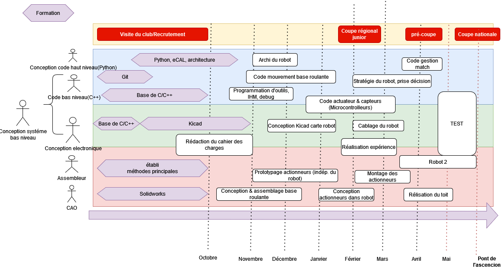
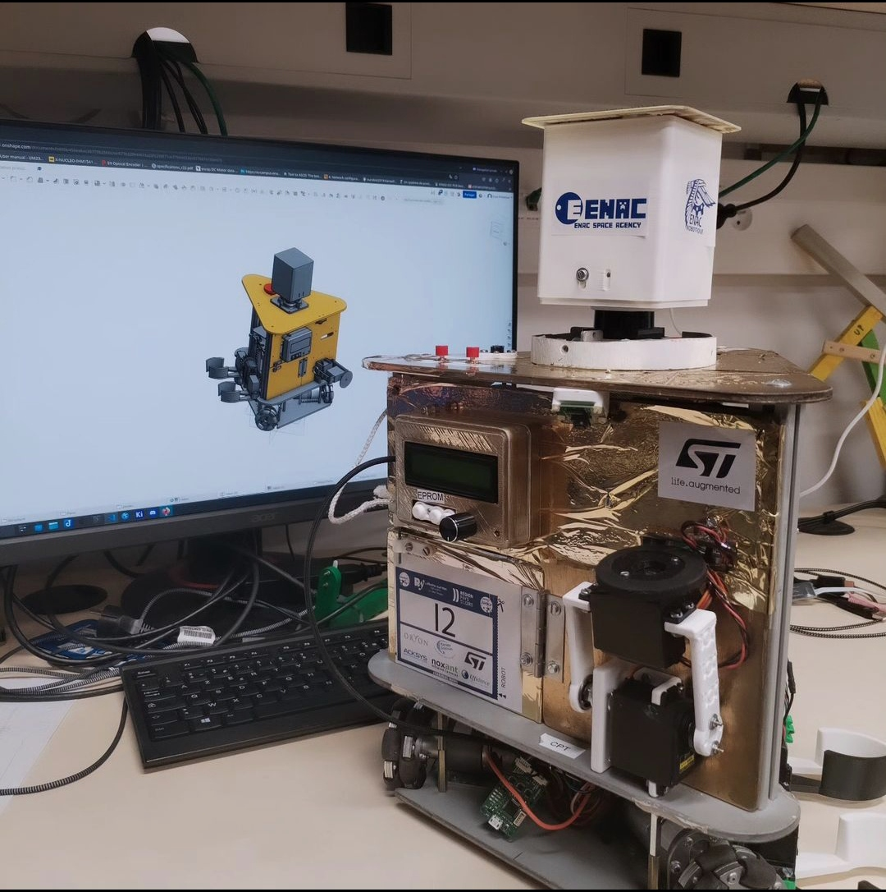
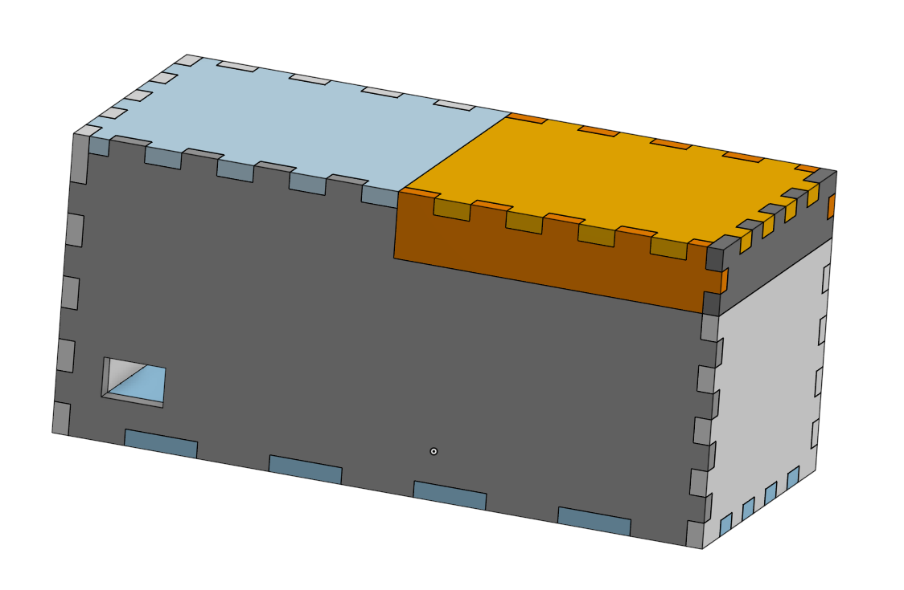
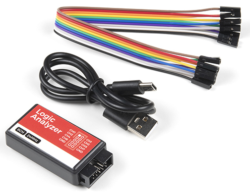

Introduction
Ce site contient la documentation du club robot de l'ENAC. Il est en cours de construction, donc très incomplet pour l'instant. Il est écrit et maintenu par des élèves amateurs de la robotique. N'hésite pas à contribuer !
Si vous êtes nouveau, lisez jusqu'à la section 4 (inclus) pour des tutoriels intéressants à suivre, et posez vos questions sur le Discord !
Si vous voulez utiliser le matériel du club, c'est possible mais attention nous ne sommes pas un FabLab. Venez nous voir le Jeudi après midi ou contactez nous sur nos réseaux.
On conseille au cours de l'année de lire les Retour d'Experience (REX) que ce soit sur la conception des robots en début d'année puis sur la coupe pour ne pas répéter les erreurs.
Ensuite, si vous avez besoin de tutos spécifiques sur certains sujets ou des clés pour se lancer, il faut consulter les petits tutos
Cette documentation est un outil pour orienter l'apprentissage de la robotique et ne se suffit pas à elle-même. Il s'agit souvent de redirection vers des ressources utiles pour faciliter la recherche aux novices. Nous ne prétendons pas donner des standards de la création d'un robot car il existe beaucoup de méthodes et de concepts liées. Nous nous reposons ici sur notre expérience
Dernière mise à jour : Juillet 2024 Changements:
- Section 4
- Section 5
Ou est le club ?
Le club se situe dans le bâtiment Z-008 en face de la volière drone.
L'accès y est règlementé, il faut un droit d'accès. Vous devrez donc passer par un membre du club pour y entrer en tant que visiteur ou en attendant d'avoir vos propres accès.

Activitée Principale
Chaque année, nous participons à la Coupe de france de robotique, organisée par Planète Sciences. Cette compétition rassemble tous les ans plus d’une centaine d’équipes venus de toute la France, et même du monde pour la coupe d’Europe Eurobot qui s’y déroule en même temps. L'évènement se tiens à la Roche sur Yon. Les participants regroupent des étudiants venus d’écoles d’ingénieurs tels que nous, mais aussi d’IUT et des anciens étudiants désireux de participer à nouveau.
Les matchs se déroulent sur une table de 2*3m pendant 100s, contre une autre équipe. Le principe est qu'il y à plusieurs interactions possibles définies par un thème annuel. Chaque action rapporte un certain nombre de points, le but étant de faire le score le plus élevé possible. Tous les robots doivent être autonomes. Cela implique qu’ils doivent disposer de différents capteurs afin de se repérer et repérer les éléments de jeu sur la table.
Il est possible aussi de rejoindre le Discord officiel de la coupe. On peut y discuter avec les organisateur et toutes les équipes. Parfait pour obtenir du support et des retours d'expériences.
L'évènemet est aussi parfait pour rencontrer des entreprises commes ST, Exotec, Continental ect... qui sponsorisent l'évènement et y tiennent des stands. Si vous cherchez un stage ou un emploi par exemple.
On peux y remporter plusieurs prix basés sur certaines performances des équipes ( créativité, communications, organisation ...). Néanmoins il n'y a pas de prix matériel. La vraie récompense est l'aventure vécue, l'expérience, les compétences et les personnes rencontrées.
Être membre du club
Pour faire partie du club, il faut :
-
Être sur le Discord, c'est le point central de nos communications internes !
-
Remplir ses coordonnées sur le Google form.
-
Ensuite, il est impératif de participer à la réunion hebdomadaire du jeudi (ou de consulter le Compte-rendu si vous ne pouvez pas venir certaines fois).
-
Enfin, il ne faut pas hésiter à demander de l'aide à tout moment, que ce soit pour se lancer/se faire former, ou savoir quoi faire.
Création de comptes
Pour accéder aux outils, vous pouvez également créer les comptes au fur et à mesure de vos besoins, et demander les accès sur Discord.
- Whatsapp Si vous avez besoin de communication rapide avec les autres membres (avant/pendant/après un event par exemple)
- Github pour partager le code, les cartes électroniques,...
- Onshape pour la modélisation CAO
Répartition des tâches
1A/2A
Auparavant (de ~2015 à 2020), le club était divisé en 2 groupes, chacun faisant un des 2 robots. D'un côté les 1A et les nouveaux, et de l'autre les 2A, afin d'être généralement regroupés par affinité, emploi du temps (et les 2A étant président & trésorier). Néanmoins, cette approche est devenue compliquée en raison d'un manque de personnes pour réaliser le robot, et le fait que les 2A ont plus de compétence que les 1A ce qu'il fait qu'on refait la roue parfois.
Désormais, tout le monde travaille sur un seul même robot, et comme le font beaucoup d'équipe, les 1A se consacrent surtout sur leur formation et la réalisation de 'l'expérience', tandis que les 2A se consacrent à la transmission et à la réalisation du robot. Selon l'avancée durant l'année, on peut réaliser le second robot, calqué sur le premier avec seulement quelques variations pour ne pas perdre de temps.
Les pôles
Comme de nombreuses équipes, depuis 2022, le club s'organise en "pôle" :
- Informatique -> Programmation du robot et des outils, de la stratégie, à haut niveau, et des microcontrôleurs, ainsi que comment communique chaque chose entre elle, du réseau,..
- Electronique -> Réalisation des cartes electroniques, et programmation des microcontrôleurs avec le pôle informatique.
- Mécanique -> Réalisation modélisation et impression 3D, découpage de planches du chassis du robot, assemblage,..
Attention il ne faut pas croire que ces pôles sont indépendants, ils sont en réalité intrinsèquement liés ! Vous ferez et verrez de tout afin de comprendre la globalité des éléments en jeux,
Pour la programmation :
-
Pour ceux qui ont déjà fait beaucoup d'informatique avant, on peut se plonger assez tôt sur ce qui a été fait avant et coder soit même.
-
Pour les débutants, les premiers mois, il vaut mieux attendre d'avoir fait des cours de l'ENAC et se concentrer sur des choses simples et laisser les autres/les anciens programmer pour ne pas se démotiver et ne pas perdre trop de temps. On vous a prévu des projets tutoriels pour vous faire les mains !
Responsabilités - Organigramme
(exemple 2022)
Les responsabilités sont dispatchées par rôles et peuvent varier pour chaque année. Un membre peut occuper plusieurs responsabilités. Ces postes n'engagent que notre organisation et sont indépendants des postes BDE. Par ailleurs seul les postes de président, secrétaire et trésorier comptent pour l'engagement citoyens. Il est préférable que des habitués du club occupent ces 3 postes afin de gérer le club avec l'expérience de son activité.
Achat de matériel
Nous somme dans un club technique et nous avons souvent besoin de matériel plus ou moins rapidement. Nous avons une procédure spécifique pour l'achat de matériel alors si tu as quelque chose à acheter pour le club ne te précipite pas ! Rempli ce Google form et préviens ton président ou le référent du club afin qu'ils prennent une décision. Tu peux le faire même pour ce qui n'est pas urgent afin que nous le référençons. Voici une liste non exhaustive des fournisseurs que nous utilisons, cherche y le matériel :
- Kubii
- Roboshop
- Robomaker
- RS
- Farnell
- Conrad
- Dagoma
- Amazon ( à éviter )
- Aliexpress ( à éviter )
Consulte aussi notre liste de matériel déjà référencé.
Organisation du google drive:
Vous n'utiliserez pas beaucoupe le drive sauf si vous avez un poste à responsabilité.
- Docs -> Documents super utiles mais pas toujours bien rangés
- Coupe XXX
- Photos de l’année, Outils de communication, Dossiers techniques, specs, cahier des charges, diagrammes,...
- Infos sur le club
- Graphismes
- Logo, affiches,...
- Tutos & où trouver les infos ( attention certaines ne sont plus au goût du jour !)
- Archives réglement
- Archives
- Anciens dossiers coupes
- Coupe XXX
Uniquement accessible au Trésorier, Président et Secrétaire:
- Organisation
- Trésorerie
- Membres
Contacts
Que ce soit pour rejoindre le club, demander un partenariat ou nous sponsoriser, vous pouvez nous contacter par mail : robotique.enac@gmail.com ou vias les différents réseaux ci dessous :

Introduction d'un robot
Comment réaliser un robot ?
Tout d'abord, il faut décider de quoi faire -> Il faut rédiger une sorte de cahier des charges.
Ensuite, il faut réunir la liste du matériel nécessaire, lesquels sont à commander par exemple.
Enfin, il faut établir la gestion du projet, c'est à dire savoir qui fait quoi et à quel moment pour ne pénaliser personne dans son travail, c'est à dire décider d'un calendrier de formation, de deadlines,...
Ainsi, en ordre d'idée, il faudrait idéalement que le robot roule déjà dès fin décembre, et qu'il soit capable de marquer des points en février.
Exemple de timeline: 
Le cahier des charges
Pour que tout le monde soit d'accord, il est impératif d'avoir un cahier des charges. Il peut être assez court (quelques pages avec photos), mais il doit contenir l'essentiel, c'est-à-dire identifier à partir du réglement des "fonctions" à réaliser (se déplacer, récupérer X objet, afficher le score,...) afin que tous les membres aient la même idée des objectifs à atteindre. Pour chaque fonction, il faut des critères avec une valeur de performance à atteindre. Ils peuvent bien évidemment être modifiés au cours de l'année.
Exemple de rapport avec cahier des charges pour le mini robot de formation Juin 2022
Exemple :
| Fonction | Critère | Niveau |
|---|---|---|
| Se déplacer | Vitesse max | 0.8 m/s |
| précision | +- 2 cm | |
| Accélération min | 0.3 m.s² | |
| Vitesse angulaire max | 1 rad/s |
Les specs du robots
L'idée est de recenser toutes les pièces qui composeront le robot (même celles imprimées en 3D), et d'indiquer l'état d'avancement (en cours de design/de commande, en cours de test,...). Pour ceux qui sont à commander, c'est le moment de voir le prix pour avoir une idée du budget du robot. Ensuite, on peut faire l'inventaire de ce qui est nécessaire pour la carte électronique. Enfin, on peut définir comment fonctionnera le code dans les grandes lignes (quel "langage" de communication entre la carte électronique et les ordis, quelles fonctionalités sont impératives, lesquelles sont facultatives,...").
Un exemple de "cahier de specs" (2022)
De quoi est constitué un robot ?
Base roulante
La base roulante est tout ce qui permet au robot de "rouler" sur la table. Cela inclut les moteurs, les roues, les capteurs pour se localiser, l'électronique pour le déplacement et la localisation (à l'ENAC généralement une carte électronique assure tout le robot), et les batteries. C'est la partie essentielle du robot, à réaliser en premier. Sans base roulante fiable, on ne peut rien faire.
Les robots différentiels
Le principe de ces robots est d'avoir 2 roues (généralement centrés sur le robot), avec généralement des patins à l'avant et à l'arrière pour que le robot ne bascule pas. On envoie des consignes de vitesse individuelles à chaque moteur ce qui permet de tourner sur soi-même, d'avancer, ou de faire des trajectoires courbées :
Les robots omnidirectionnels :
Ceux-ci ont la faculté de se déplacer dans toutes les directions grâce à la forme spéciale des roues.
Un exemple de gif pour un avec 4 roues :

On peut également en retrouver à 3 roues, généralement pour faire des robots triangulaires. Le seul désavantage des 3 roues est qu'il n'est pas capable de passer par dessus un obstacle, contrairement à celui à 4 roues qui pourrait. Pour tourner sur lui même, il suffit de faire tourner les 3 roues dans un sens, et pour se déplacer dans une des trois directions, il suffit de faire avancer 2 roues adjacentes (la troisième roue roule "latéralement" => Pas de frottement ) Le désavantage des robots omnidirectionnels est qu'il est plus compliqué de se repérer dans l'espace avec ceux-là (à voir partie localisation).

La motorisation
Des moteurs électriques, assez basique, ~12-18V, 10W grand maximum. Vérifier le couple avec le rayon des roues, le reste au pifomètre. Des outils pour calculer éventuellement le dimensionnement & les caractéristiques du moteur
Les roues
On retrouve principalement :
- Des roues en caoutchouc (classique)
- Des roues déjà faites plus exotiques (par exemple des roues de rollers) -> Peuvent endommager la table
- Faire les roues soit même en polyuréthane, avec l'intérieur de la roue en impression 3D. L'avantage est que l'on peut dimensionner la roue comme on a besoin, ça accroche mieux que la caoutchouc à la table, et ça ne fait (quasiment) pas de dégats sur la table en cas de dérapage. Parcontre il faut le mouler. Exemple de roues en 2022 sur le dropbox "Tutoriel pour réaliser les roues"
Base mécanique
Forme du robot
On retrouve principalement 4 formes possibles :
- Carrées/Rectangulaire
- ++ Pratique pour se coller à un "mur"
- -- Peu optimal pour l'utilisation du périmètre
- -- Peut facilement rentrer en collision avec quelque chose en tournant sur lui même (difficile de tourner sur lui même près d'un mur)

- Cylindrique
- ++ Pour le périmètre
- -- Peu optimal par rapport à ce qu'on utilise : les actionneurs, les pièces mécaniques, etc... sont généralement rectangulaire

- Hexagonal (is Bestagon)
- + Pour le périmètre
- + Bon compromis entre cylindre et rectangulaire pour le placement des objets à l'intérieur.
- Triangulaire
- ++ pour les robots holonomes à 3 roues
- ++ On a des grands 'plats' et de la mobilité 
Techniques de construction
Pour construire mécaniquement le "cadre" du robot, une méthode que l'on utilise souvent au club robot est de mettre une planche à la base du robot avec les roues, 4 profilés (=poutres) en métal et une planche qui fait le "toit". Entre les deux, on peut mettre des planches verticalement ou horizontalement vissés aux profilés.
Pour les profilés :
- Profilés 20*20, M5, Ecrou en T
- Makerbeam

Pour les planches :
- Planches en bois
- Verre acrylique
- en métal
Capteurs
Pour mesurer certaines choses, on peut utiliser :
| Capteur | Usages |
|---|---|
| Pression | Pour les systèmes pneumatiques (Ventouses) -> savoir si on a attrapé quelque chose |
| Tension | Pour le niveau de charge des batteries, mesurer la valeur d'une résistance, ... |
| Distance TOF (Time Of Flight)/Ultrason | Permet de mesurer une distance entre le capteur et autre chose en face du capteur, en mesurant le temps que met un rayon laser à se réfléchir pour les TOF ou les ondes sonores pour l'ultrason. On peut utiliser cela pour savoir si on a attrapé un objet par exemple, si il est bien présent, pour savoir s'il y a un autre robot, ... Généralement (mais ça dépend des modèles) ils sont assez précis (1-10mm près) qu'à partir d'une distance de 1-2 cm jusqu'à 1m. |
| Couleur (ex : TCS34725) | Pour déterminer une couleur. Ne marche qu'à distance très faible (<1 cm), et il y a une led blanche intégrée pour l'éclairer. |
| Caméra | Pour faire de la vision par ordinateur -> Déterminer la position d'un objet, déterminer sa couleur, ... Mais c'est super complexe à mettre en oeuvre donc qu'en dernier recours. |
| Température | Pas d'utilité pour la coupe de robot pour l'instant mais ça existe. |
| Récepteur infrarouge, radio | utilisable pour la communication sans fil (entre robots) |
| Interrupteur | Permet de détecter si le robot ou autre chose est en "contact" physique. Par exemple, on peut en mettre sur le robot à "l'avant" pour savoir s'il est en contact avec le mur et donc si c'est le cas, on sait que la position du robot est contre un mur et on peut "recaler" sa position ainsi. |

Localisation
| Capteurs localisation (exemples) | usages |
|---|---|
| Encodeur optique (AMT-102V) | Surtout pour les robots différentiels. Ce sont des dispositifs qu'on met autour d'un axe (par exemple une roue) pour mesurer le nombre de "tours de la roue". En connaissant le diamètre de la roue, on peut connaitre sa distance parcourue. Certains sont déjà intégrés aux moteurs, mais le problème est que si les roues "dérapent", les encodeurs sur le moteur ne sont pas en mesure de le détecter. On retrouve donc dans certains robots des roues "folles", qui sont juste sur un axe avec une faible résistance pour mesurer les déplacements d'un robot.  |
| Capteur optique (Souris, PAA5100JE) | Placé à distance constante du sol, il filme continuellement le sol et via des algorithmes il détermine le "déplacement" horizontal du robot en déterminant les différences entre les images filmés. La précision n'a pas encore été testé au club robot ENAC mais d'après d'autres clubs, c'est prometteur. |
| Lidar (2D)(Lidar LD06) | Le lidar est un capteur laser qui mesure sur un angle important (généralement 360°) les distances périodiquement(~10hz). L'usage principale est de détecter les adversaires ainsi. Un projet testé pour la coupe 2022 était de repérer des points fixes connus sur le terrain, et ainsi de trianguler la position du robot. Sinon on pourrait aussi le mettre proche du sol pour détecter les murets et certains algorithmes sont capable de déterminer les déplacements de cette manière. Pour info, ça existe aussi en 3D mais ça sert à rien pour la coupe et ça coute une blinde.  |
| IMU/Centrale inertielle/Accéléromètres | Pas testé au club robot, une centrale inertielle est un instrument, capable d'intégrer les mouvements d'un mobile pour estimer son orientation, sa vitesse linéaire et sa position. L'estimation de position est relative au point de départ ou au dernier point de recalage. |
| Vision par ordinateur (Camera/Code Aruco) | Les codes Aruco sont les sortes de QR code sur le terrain. Des algorithmes sont capables de déterminer avec une caméra leurs positions dans l'espace et donc si on en met un sur le robot, de déterminer la position du robot par rapport aux codes arucos du terrain. mais c'est complexe à mettre en œuvre également. |
| Triangulisation | Ultrason, Infrarouge sur les balises fixes, on peut mettre des capteurs/émetteurs ultrason/infrarouges et sur le robot, on peut se trianguler. |
Actionneurs
A la base de chaque "mouvement" de robot, on retrouve un moteur (mouvement de rotation). Lorsqu'on a besoin de faire certains types de mouvements, il faut faire des Transformations
Pour attraper les objets, on peut réaliser des "bras" avec un servomoteur qui déplace le bras, et au bout on peut retrouver des :
- Pince
- Ventouse (pneumatique, électrovanne)
- Ou pousser directement avec l'actionneur
Carte electronique
Pourquoi utiliser des circuits électroniques ? Pensez à un clavier. Vous pouvez connecter tous les interrupteurs d'un clavier avec des fils et des diodes et toutes ces jolies choses, mais vous vous retrouvez avec un merdier. Un circuit imprimé est essentiellement un foutoir de fils qui n'est en fait qu'une carte avec un câblage en cuivre d'un millimètre d'épaisseur qui est bien agencé pour permettre des connexions rapides et cohérentes sans fils, et sur lesquelles on est sur que tout les composants ont la bonne alimentation/courant électrique, et les bonnes connexions pour des protocoles plus complexes entre les composants et le microcontrôleur.

Microcontrôleur

Pin disponible -> Permet de brancher plus de capteurs, actionneurs, et toute sorte de composants électroniques.
| Microcontrôleur | Capacité de calcul/RAM/Espace | Pin disponible | Réseau | prix(hors pénurie) |
|---|---|---|---|---|
| STM32 (français) | Moyen à fort | Moyen à fort (~30-60) | Pas de réseau | Pas cher |
| ESP32 (chinois) | fort à très "fort" | ~20-30 | Wifi, bluetooth | Pas cher |
| Arduino (UK) | Faible | ~10-20 | Pas de réseau | Très cher (pour les capacités) |
| Teensy (USA) | Moyen à fort | Moyen à fort (~30-60) | Pas de réseau | Cher |
Au niveau de la programmation, généralement, plus c'est simple à programmer, moins il y a de "flexibilité" pour faire des choses complexes. Ainsi, les arduinos peuvent être assez limités pour les robots. Simple à utiliser, mais dur lorsque le micocontrôleur doit gérer plein de choses.
Pourquoi ne pas programmer tout le robot sur le microcontrôleur mais qu'on utilise aussi des ordinateurs ? -> On est obligé d'utiliser des languages "bas niveau"(C, C++) et on pourrait perdre plus de temps à développer des choses avec ces languages qu'en utilisant d'autres plus simples (python,...). C'est compliqué de débugger des choses complexes, et la puissance de calcul reste limité.
Ordinateur
Raspberry pi

Exemple d'architecture globale :
Voici un exemple de comment relier tous ces composants :

Au sommet, on retrouve un embedded computer (-> Raspberry pi), qui commande un "peripheral board" (-> Carte elec à faire durant l'année) et reliés à d'éventuels composants "gourmands" en puissance de calcul(caméra, lidar,...). Le peripheral board (qui peut être décomposé en plusieurs cartes) lui est connecté à tous les autres composants électroniques.
Les batteries
On utilise des batteries de perceuse (Makita, 18V), sinon les Lipo/Life de hobby king de 12/14V sont très bien, des cellules LifePo4 3.2V En terme de consommation électrique, en ordre de grandeur on à 2/3A en pic pour les moteurs, et 1/2A pour le reste.
Lexique
On regroupe ici du vocabulaire fortement utilisé et qui se maitrise uniquement par la pratique. Donc pas besoin d'essayer de tout retenir le premier jour. Ce n'est pas exhaustif, ces notions sont les parties émergées de l'iceberg de complexité de leur domaines. Dans notre cadre d'application il est rarement nécéssaire d'aller en profondeur. Donc pour des complets débutants il est fortement recommandé d'être humble et d'acceptez de ne pas tout comprendre du premier coup :). Vous pouvez utiliser Wikipédia ou internet pour plus d'explication.
Coupe
- L'expérience : chaque année, on doit réaliser un objet à poser automatique que le robot doit déclencher. (Par exemple un phare en 2021, une vitrine d'exposition en 2022, un panier en 2023... ).
Architecture
-
Haut Niveau : Désigne généralement les fonctions de l'ordinateur de bord ( souvent une Raspberry pi ). Incluant la prise de décision, le traitement des données, la commande. On peut le voir comme l'intelligence du robot.
-
Bas Niveau : Désigne les fonctions associées aux microcontrolleurs (souvent des STM32). Incluant la gestion des actionneurs, des capteurs, de l'asservissement. On peut le voir comme le système nerveux du robot.
-
Base roulante : Ce qui permet au robot de "rouler" : les roues, le moteur, le chassis, les capteurs de "positionnement", l'électronique et le code qui va avec.
Microcontrôleurs
-
GPIO : General Purpose Input Output. Désigne des broches sur un microcontrôleur ou un microprocesseur que l'on peut configurer pour recevoir ou envoyer des signaux numériques. Ces broches permettent de connecter et de contrôler des composants externes comme des LEDs ou des capteurs. Elles sont couramment utilisées dans des projets électroniques pour interfacer des appareils avec des systèmes comme le Raspberry Pi ou Arduino.
-
ADC : Analog to Digital Converter. C'est un dispositif qui convertit un signal analogique, comme une tension variable, en un signal numérique que les ordinateurs et microcontrôleurs peuvent comprendre.
-
UART : (Universal Asynchronous Receiver-Transmitter) est un dispositif qui permet de communiquer entre deux appareils électroniques via une transmission série asynchrone. Il convertit les données entre les formats parallèle et série, permettant d'envoyer et de recevoir des données bit par bit sur une seule ligne de communication. C'est couramment utilisé pour la communication entre microcontrôleurs et périphériques comme les modules Bluetooth ou GPS.
-
I2C :(Inter-Integrated Circuit) est un protocole de communication série qui permet à plusieurs périphériques électroniques de communiquer entre eux via seulement deux fils : un pour l'horloge (SCL) et un pour les données (SDA). Il est souvent utilisé pour connecter des capteurs, des mémoires, et d'autres composants à un microcontrôleur, en permettant à plusieurs appareils de partager le même bus de communication.
-
Timers : Les timers sont des composants intégrés dans les microcontrôleurs qui permettent de mesurer des intervalles de temps ou de générer des événements à des moments précis. Ils peuvent être utilisés pour créer des délais, mesurer la durée d'un événement, ou déclencher des actions périodiques, comme faire clignoter une LED ou générer un signal PWM. On peut les voir comme des compteurs qui comptent les nombres de cycle d'horloge du processeur et déclenche des évènements à partir d'une certaine valeur.
-
Baud : Le baud est une unité de mesure représentant le nombre de changements d'état ou de symboles par seconde sur une ligne de transmission. Un symbole peut représenter plus d'un bit si des techniques comme la modulation de phase ou d'amplitude sont utilisées. Dans notre cas le baud désigne systématiquement le nombre de bits par secondes.
-
Bits par seconde (bps) : Dans les communications simples, comme celles utilisant le protocole UART (Universal Asynchronous Receiver/Transmitter) dans des microcontrôleurs ou des ordinateurs, chaque symbole correspond généralement à un bit de données. Ainsi, si le baudrate est de 9600, cela signifie que 9600 bits de données sont transmis par seconde.
Datasheets
Cheat sheets
Micro controlleur
Capteurs
Composants passifs
Composants actifs
Autres
Les bases
Les bases de la fabrication d'un robot peuvent se simplifier en distinguant trois catégories primaires:
- L'électronique
- L'informatique
- La mécanique
Ces trois pilliers doivent vivre en symbiose si on veut pouvoir fabriquer un robot. Aussi il est donc nécéssaire d'en avoir les bases et même un peu plus. Mais pas d'inquiétude, l'objectif du club est justement d'avoir ce "plus" au fil de la pratique. Cette section contient plein de liens et de tutoriels pour commencer dans ces trois domaines.
Outils Communs
Au club on utilise linux pour la plupart des trucs. Il est conseillé de l'installer : Installer un dual boot.
On utilise git pour la gestion de version du code. C'est un outil magique pour travailler à plusieurs sur un projet ! Commencer avec Git.
On utilise actuellement Visual Studio Code pour le code.
Pour la modélisation 3D on utilise Onshape.
Enfin, on utilise Kicad pour les cartes électroniques.
Les Ordinateurs du club ont tout d'installés si vous voulez vous y essayer avant.

VS Code
Editeur de texte :
L'éditeur à utiliser est visual studio code : VS code. Vous serez amenés à l'utiliser aussi en cours alors il sera judicieux de l'avoir sur votre machine personnelle.
Pour installer un ".deb" sur ubuntu par exemple, vous pouvez faire :
sudo dpkg -i fichier.deb
Vous pouvez ensuite installer les extentions C/C++ et Python directement depuis VS code. Ça vous facilitera la lecture des différents codes ainsi que l'auto complétion.

Outil de compilation pour l'embarqué:

Une extension de VS code qui permet de compiler vers les microcontrôleurs est platformio.
Vous apprendrez à l'utiliser directement au club lorsque vous aborderez le C++.
Il est nécessaire d'installer venv pour que platformIO fonctionne : sudo apt install python3-venv.
Pour linux il faut également rajouter des règles udev.
Installer d'abord curl: sudo apt install curl
Ensuite vous pouvez taper la commande automagique :
curl -fsSL https://raw.githubusercontent.com/platformio/platformio-core/develop/platformio/assets/system/99-platformio-udev.rules | sudo tee /etc/udev/rules.d/99-platformio-udev.rules
Ou le faire manuellement en le téléchargeant directement depuis le manuel : udev rules for Platformio
Ensuite redémmarez udev:
sudo service udev restart
ou
sudo udevadm control --reload-rules
sudo udevadm trigger
Résolution de problèmes avec VS-Code
Lorsque vous téléversez du code il est possible que vous rencontriez cette erreur :
Error: libusb_open() failed with LIBUSB_ERROR_ACCESS
Error: open failed
in procedure 'program'
** OpenOCD init failed **
shutdown command invoked
*** [upload] Error 1
=========================== [FAILED] Took 2.36 seconds ===========================
* The terminal process "platformio 'run', '--target', 'upload', '--upload-port', '/dev/ttyACM0'" terminated with exit code: 1.
* Terminal will be reused by tasks, press any key to close it.
Cela peut être dû à plusieurs choses.
- Première explication :
Vous avez un problème d'alimentation. Essayez un autre câble ou une autre prise usb.
- Deuxième explication :
Regardez le message d'erreur : Error: libusb_open() failed with LIBUSB_ERROR_ACCESS. Souvent sous linux l'accès aux USB est restreint. Il faut donc ajouter des accès pour pouvoir téleverser du code. Le plus problable est que vous n'avez pas ajouté les permissions udev comme précisé plus haut.
- Troisième explication (Approximative):
Un programme est déjà en cour sur le microcontroleur que vous utilisez et le bloque dans une boucle infinie. Cela l'empêche donc de récupérer le programme que l'on veut téléverser. Maintenez le bouton reset, cliquez sur upload et relacher le reset au bout d'une seconde ou deux. Ça ne marchera pas forcément.
Bases de Python
Introduction
Si vous n'avez jamais programmé en Python, Zeste de savoir propose une bonne introduction des notions de base (communes à tous les langages), avec un TP pour appliquer directement. Le tuto devrait prendre ~8H à faire au total.
Pour les IENAC, vous aurez des cours de python dès le premier semestre qui vous apprenent des notions très utilisé au club. Il peut être intéréssant donc de ne pas s'y focaliser dans un premier temps et d'apprendre dans d'autre pôles.
Le python au club robot
Au club robot, nous utilisons le python pour réaliser de nombreux programmes, que ce soit des scripts, des interfaces graphiques ou encore la stratégie du robot. Pour cela, il peut être nécessaire de bien découper le programme, et d'être capable parfois de traiter en temps réel des données provenant d'un autre ordinateur.
#TODO
Vous pourrez consulter ultérieurement :
- Robokontrol
- eCal
- tuto code - architecture globale
La programmation pour l'embarqué
Lorsque vous voulez programmer ( en python par exmple) vous utiliser votre ordinateur et vous y écrivez votre programme. Néanmoins vous avez bien vu que votre ordinateur est peut être un peu encombrant pour un petit robot et puis vous n'avez pas besoin de pouvoir lui brancher un clavier et un écran en permanence. Aussi peut être vous vous voyez mal brancher tout vos composant électroniques directement à votre ordinateur. C'est la qu'intervient la programmation embarqué!
En embarquée vous avez besoin de relier un programme aux circuits électroniques de votre robot afin de pouvoir l'automatiser. C'est là qu'interviennent les circuit éléctoniques programmables, les microcontrôleurs. Ils sont généralement programmés en utilisant le language C++ ( dérivé du language C) que vous aprrendrez à utiliser au club.
À préciser que pour ceux qui ont déjà programmé en C et qui n'ont jamais fait d'embarqué qu'il faudra quand même suivre les tutoriels section I.
Installation
Il va falloir installer plusieurs choses sur vos ordinateurs :
Outils de compilation :
Le C est un language compilé. Sous Linux vous utiliserez g++ pour compiler votre code. Vous utiliserez également GDB pour déboguer. Ces outils ne sont pas installés par défaut sur Ubuntu, vous devez donc les installer. Heureusement, c'est facile.
Nous allons donc installer un ensemble de paquet très utile pour le développement et la compilation sur linux, il contient g++, GDB ainsi que make que vous serez ammené à utiliser plus tard.
Exécutez la commande suivante à partir de la fenêtre du terminal pour mettre à jour les listes de packages Ubuntu. Une distribution Linux obsolète peut parfois interférer avec les tentatives d'installation de nouveaux packages.
sudo apt update
Installez ensuite le paquet build-essential avec cette commande :
sudo apt install build-essential
Vous pouvez ensuite vérifier la version de gcc avec : gcc -v
I - Le C++ pour l'embarqué
Vous aurez un cours pratique sur la Carte tuto faite par le club pour découvrir le monde merveilleux de l'embarqué.
Il est recommandé ensuite de suivre les tutoriels de Zeste de savoir qui vous permettront de vous plonger au cœur du sujet avec des mises en pratique et traitant toutes les notions utilisées en embarqué. Dans ce tutoriels c'est une carte arduino qui est utilisée. Nous en avons au club. Néanmoins pour nos robot nous utilisons des cartes ST(celle de la carte tuto!) qui se programment de la même façon, vous pourrez donc vous entrainer directement dessus.
II - Le C plus généralement
Si vous avez dejà fait du C seule la section précédente vous intéresse.
Le C++ est un dérivé du language C. Pour approfondir votre maîtrise il vous faudra suivre cet autre tutoriel de Zeste de savoir. Il contient des notions de bases que vous aurez normalement déjà vu et d'autres plus avancées qu'il vous faudra bien connaître également (principalement la notion de pointeur).
Les tutoriels sont en français et devraient prendre une dizaine d'heures, n'hésitez pas à survoler certains détails et ne vous embêtez pas à retenir, vous pouvez toujours retrouver le tutoriel si vous avez oublié quelque chose :p (On est pas en examen !). Vous n'êtes pas contraint de maîtriser ces cours avant d'arriver au club. Cependant il faudra y consacrer du temps comme pour tout apprentissage. Et bien évidement demandez de l'aide si besoin !
Par exemple, focalisez vous sur les types assez simple (int, float, char), les opérateurs mathématiques basiques, les conditions et les fonctions.
Avec la pratique vous finirez par vous souvenir de ce qui est le plus utilisé dans votre quotidiens.
III - Problématiques robots embarqués
Ultérieurement, vous pouvez voir les problématiques liées à l'asservissement sur le site de PM robotix.
(TODO)
Mécanique
La mécanique au club
Un robot, il faut lui donner vie ! Et pour se faire quoi de mieux que deux planches et 3 vis. Bon d'accord c'est plus complexe que ça je te le cède. Le club est un petit atelier équipé de nombreux outils qui te permettrons d'assembler toutes sortes de montages et mécanismes qui constituent le robot. La plupart de nos outils ne nécéssite pas de formation spécifique. Pense néanmoins toujours à ta sécurité quand tu les utilises, si tu as un doute, demande de l'aide car c'est très facile de se blesser.
Nous utilisons aussi le FabLab de l'Insa qui est très bien équipé. Notamment ils ont une CNC et une découpeuse laser. L'utilisation des machines se fait facturer à la minute. Il ont aussi un catalogue de noël si vous voulez vous offrir des maquettes à titre personnel.
La C.A.O
Avant de fabriquer le robot il faut le designer. On utilise principalement la conception assistée par ordinateur (CAO ou CAD en anglais).
La CAO permet de représenter les objets en deux ou trois dimensions sur un écran. Elle inclut des fonctions multiples comme le calcul numérique, la modélisation, etc.
Les logiciels de CAO doivent être en mesure de réaliser les tâches suivantes :
- la manipulation d'objets 2D ou 3D,
- la représentation graphique,
- le dessin de plan,
- la gestion des grands assemblages.
- la modélisation numérique,
- le calcul numérique,
Au club nous l'utilisons essentiellement pour le dessin des pièces et l'assemblage mécanique du robot. Nous ne faisons pas de calcul numérique.
Logiciels
Initialement le club utilisait Solidworks pour la modélisation 3D. Depuis la session 2023 le club cherche à migrer vers Onshape. La raison principale est qu'il a l'avantage d'être dans le navigateur ce qui rend son utilisation beaucoup plus accessible. Aucune instalation, pas besoin de windows, pas besoin de pc surpuissant. Pour les habitué de solidworks ne vous inquiétez pas, le logiciel est très similaire dans la création des pièces, il faut juste un petit temps d'adaptation. La ou il diffère c'est dans la gestion des versions et des fichiers mais vous verrez ce n'est rien de compliqué c'est même pratique !
Vous pouvez tout de suite commencer en suivant cette série de tutoriel sur youtube comprenant les bases de création d'une pièce et d'utilisation du logiciel.
Onshape

S'inscrire sur Onshape.
Tutos Onshape
(Tutoriel maison avec des images c'est mieux !)
Autres tutoriels :
-
Faire une pièce paramétrée youtube
Solidworks
Le club n'utilise plus solidworks à partir de la rentrée 2023. Néanmoins si vous souhaitez apprendre à utiliser le logiciel il est disponible sur les postes du club. Nous ne l'utiliserons simplement pas pour la conception du robot sauf éventuellemnt dans certains cas très particuliers.
Vous pouvez obtenir une licence étudiante gratuite si vous souhaitez l'installer à titre personnel sur votre machine.
Vous pourrez ensuite suivre les tutoriels solidworks pour apprendre. Certains membres ont déjà utilisé le logiciels. N'hésitez pas à leur demander conseil.
Impression3D
Pour le prototypage on utilise beaucoup l'impression 3D Nous avons à notre disposition une Creator Pro 2 que tu apprendras à utiliser bien évidemment! Une fois que tu auras fait ta première pièce il te faudra utiliser le logiciel FlashPrint pour rendre ton modèle 3D lisible pour l'imprimante. ( Il n'est pas nécéssaire de l'installer il est sur les postes du club ! ) Tu apprendras à tout utiliser lors des sessions de formations. Tu peux aussi utiliser l'imprimante pour des projets personnels, mais pense à ramener ta bobine (surtout si tu compte imprimer des figurines...).
Utiliser Flashprint
(Tuto maison avec des images svp)
Changer le filament d'imprimante
Creator Pro2
Ultimaker
Découpe Laser
Préparer un fichier de découpe avec inkscape
- vectoriser une image ?
Préparer un fichier de découpe avec onshape
Prenons l'exemple de cette useless box dont on aimerait découper les différents pièces :

Pour pouvoir la découper, il faut passer d'un fichier 3d à 2d. Pour cela, nous utiliserons la feature Auto Layout.
Voici à quoi ressemble le menu lorsque que l'on clique sur l'icône.

- Thickness of material correspond à la finesse du bois que l'on souhaite utilser
- Cut sheet width & Cut sheet height correspond à la longueur et à largeur de la planche de bois.
- Spacing correspond à l'espace minimal entre 2 pièces
- Mutlitple copies permet de mettre plusieurs fois le projet que l'on souhaite découper (pratique si on veut faire la même découpe plusieurs fois sur la même planche)
- Assign oriented faces permet de forcer le sens de la pièce en mettant la face selection sur le dessus
- Show cut sheet on sketches permet de voir l'esquisse de la taille de la planche
Avec les paramètres de la photo précédente, on obtient :

Maintenant que nous avons nos pièces à plat, on va pouvoir créer le modèle 2D. Pour cela nous allons créer un nouveau dessin avec les paramètres suivant :
Et ensuite on ajoute notre atelier de pièces en cliquant sur :
insérer une vue -> inserer -> document actif -> atelier de pièces -> notre atelier de pièce (ici Part Studio 1).
Après avoir cliqué sur notre pièce, il faut penser à changer l'orientation de la vue par "dessus" avant de la poser sur le dessin

Découpeuse du club
Le club possède une découpeuse laser depuis la rentrée 2024 nous n'avons donc encore rien documenté. Tu sera peut-être celui qui écrira cette section qui sait :) ?
Tutos elec
L'elec de base ce n'est pas sorcier, mais on peut pas l'inventer ! Alors voilà quelques petits tutos en rapport avec l'elec, notamment des schémas pour les circuits les plus courants.
Commencez donc par allumer une LED !
Pour les débutants complets voici une série de tutoriels non exhaustif d'éléctronique de base sur youtube.
La LED - Light Emitting Diode

La led, c'est la base. Il faut toujours avoir une LED sous la main. Alors commençons direct :
- Le premier "composant" (la flèche vers le haut) représente une source de tension continue (on ne travaille qu'en continu).
- Le 2ème est une résistance
- le 3ème une LED
- le dernier, la masse (point où le potentiel vaut 0V)
Comme au collège, on suppose que le potentiel est constant le long d'un fil.
La LED est un semi-conducteur qui ne laisse passer le courant que dans un sens, de l'anode (le haut dans ce schéma) vers la cathode (le bas).
Elle a une tension de seuil en deçà de laquelle elle ne s'allume pas. La résistance est absolument nécessaire afin de ne pas griller la LED, où le système qui l'alimente !
Calculer la résistance
Pour calculer la résistance, nous devons connaître la tension d'alimentation (ici 5V, nous l'apellerons Vcc), la chute de tension aux bornes de la LED Vd, et le courant que nous voulons faire passer dans la led i.
Admettons pour l'exemple que la chute de tension au borne de la LED soit Vd=1.6V, et nous voulons faire passer un courant de i=10mA.
- on calcule d'abord la tension au borne de la résistance (loi des mailles):
Vr=Vcc-Vd(donc ici: Vr=3.4V) - on calcule ensuite la résistance avec la loi d'ohm (U=RI):
R=Vr/i(donc ici: R=3.4/0.01, R=340 ohms)
Déterminer les paramètres
C'est bien tout ça, mais comment on trouve Vd et i ? La réponse se trouve dans un document appelé la datasheet.
Ce document existe pour tout les composants électronique, et il faut le consulter avant d'utiliser un composant.
Pour des composants "standards", il n'y aura pas besoin de tout lire, on pourra se concentrer sur quelques infos précises.
Voilà une datasheet pour une LED : BIR-BM1331.
Quelques indices pour lire une datasheet :
- En haut à doite, il y a généralement le nom des composants décrits par la datasheet.
- Ensuite, il y a un desciption synthétique du composant. C'est rapide et facile à lire, et il y a beaucoup d'infos intéressantes, donc c'est à lire !
- Il y a généralement une section "Absolute maximum ratings". Si vous dépassez les valeurs données ici, vous allez à coup sûr griller le composant. Il ne faut jamais atteindre ces valeurs. Cette partie sert à savoir rapidement si le composant peut convenir pour notre cas ou pas.
- Le reste de la datasheet contient toutes les infos nécessaire, c'est là qu'il faudra chercher.
Par exemple ici, dans les Absolute maximum ratings, le premier paramètre est "Reverse voltage => 5V". Ça veut dire que si vous branchez la LED à l'envers sur une alimentation de 5V ou plus, la LED va griller très rapidement. Plus intéressant pour nous, Continuous forward current 100mA. On sait donc qu'il faudra fixer le courant à moins de 100mA.
Pour une LED, on va chercher le courant qu'on va faire passer. C'est pas toujours très clair à trouver, mais ici, un gros indice sont les "test condition" qui prennent If = 50mA ou 20mA. C'est bien inférieur à 100mA, on peut donc choisir 20mA.
Ensuite, il faut touver le forward voltage correspondant à ce courant. On peut le lire, assez difficilement grâce à la figure 3: "Forward current vs. Forward Voltage". Pour If=20mA, on trouve environ Vf=1.2V.
On peut donc refaire notre calcul de résistance: R=(5-1.2)/0.02 donc R=190 Ohm
Identifier un problème dans un circuit
Vous avez monté un circuit et il ne fonctionne pas ? Branché un composant sur un microcontrolleur et copié collé parfaitement le code mais aucune réaction. La dernière fois ça marchait et pas aujourd'hui ? Avant de jetter votre matériel pensez à vérifier l'état de votre circuit ! Pour cela il y 'a plusieurs outils essentiels à savoir utiliser et certaines vérifications à faire.
Défaut dans un circuit ou sur une carte
Tout d'abord il vous faut savoir comment utiliser un Multimètre.

Pour détecter rapidement un court circuit ou au contraire si le courant ne passe pas où il devrait, vous pouvez commencer par utiliser le testeur de continuité (icône de diode).
LES CÂBLES sont très souvent source de problèmes surtout quand il sont de mauvaise qualité. Le courant ne passe pas ou alors passe mal. C'est souvent à cause de cela que certains composants ne réagissent pas ou ont un comportement irrégulier. Si vous avez des fils sertis ou vissés il faut vérifier qu'ils ont correctement été montés.
Une autre chose est de vérifier si il y'a des défauts mécaniques sur la carte. Des soudures ont peut être cédée suite à des chocs. Par exemples les borniers d'alimentations peuvent facilement être arrachés lorsqu'on les visse et qu'on applique trop de force.
Votre microcontrolleur peut être endomagé. Vous pouvez vérifier si les broches fonctionnent en regardant si les changements de tensions suivent un signal que vous attendez ou en utilisant le testeur de continuité.
Un exemple:
En 2024 nous avions branché un driver de stepper à l'envers sur une nucléo l432KC. Le driver à brulé. Après cela nous avions vérifié le circuit qui n'avait pas l'air d'avoir été endomagé. Bien plus tard nous nous étions rendu compte d'une irrégularité dans le contrôle de certains composants. Nous avons donc débugué le code pendant des heures, testé avec plusieurs actionneurs. Et c'est en testant les connexions que nous avons remarqué que l'une des pins de la nucléo ne fonctionnait plus. Au final un simple test au multimètre à suffit...
Comment débuguer un signal complexe ?
Dans le cas ou vous voulez faire passer des signaux plus complexes que du tout ou rien, un multimètre ne suffit pas. Vous pourriez penser à un oscilloscope mais là encore vous ne pourrez pas forcément voir ce que vous voulez. C'est là qu'intervient l'analyseur logique !
C'est un outils qui permet d'analyser des signaux logiques et parfois analogiques selon les modèles. On le branche par USB au pc et on utilise un logiciel pour visualiser les signaux qui peuvent être décodés directement. Vous pourrez normalement le tester avec la carte tuto.
Microcontrôleurs
On attaque une des briques les plus complexes de notre aventure. Par complexe j'entends copmpléxité technologique. Les microcontrôleurs sont des mini calculateurs programmables qui permettent de commander de l'électronique, des capteurs, des actionneurs. On les retrouve partout dans notre quotidien. Je vous conseille de commencer par regarder ces deux vidéos:
Vous connaissez peut-être les cartes Arduino? Ce sont des microcontrôleurs très simplifiés qui permettent d'apprendre beaucoup plus facilement à les utiliser. Ils sont très begginner friendly avec une grande communauté qui répondra à toutes vos questions.
Au club on utilise surtout des STM32, des ESP32 ou des TEENSY. Mais nous avons encore d'autres candidats comme l'attiny...
En ce qui concerne l'utilisation des microcontrôleurs on ne peut comprendre qu'en apprenant, apprendre qu'en essayant. Ainsi nous vous conseillons surtout d'essayer sois avec des kits arduino, soit directement avec la Carte tuto conçue à cet effet par le club.
Comment choisir un bon µC ?
Vous avez d'abord besoin de savoir ce que vous voulez brancher. Cela va définir les fonctions et le nombre de connexions avec le µC. Si vous voulez utiliser du PWM et de l'UART. Si vous avez besoin d'alimenter en 5V et en 3.3V en même temps.
La deuxième étape est de savoir quelles fonctions peuvent marcher en même temps. Il peut arriver par exemple de ne pas pouvoir utiliser les fonctions SPI et UART en même temps. Par exemple sur la Nucleo L432KC on ne peut pas utiliser l'I2C et tout les ADC en même temps.
Autre critère, le Wifi et le bluetooths sont déjà intégrés sur les ESP32 mais pas sur les STM32. Cela veut dire que si vous voulez utiliser le wifi sur une stm il faudra un module externe, et donc utiliser des pins. Alors que l'ESP le fait déjà nativement et a des bibliothèques dédiés à cet effet.
La taille de la carte aussi joue un rôle. Certes elles ne sont généralement pas très grandes mais vous pouvez très vite voir qu'entre une L432KC et une F401RE (celle de la carte tuto) l'encombrement peut être handicapant sur un robot de petite taille.
Et si aucune carte n'est vraiment adapté à mes besoin ?
Dans ce cas on passe à l'étape supérieure : fabriquer notre propre µC ! Lisez donc la prochaine section :)
Kicad
Pour commencer vous pouvez visualiser cette vidéo qui montre en 10 minutes comment se déroule une conception de pcb sous Kicad : Kicad in a nutshell. Attention c'est assez rapide.
Lorsque vous travaillez vous voudrez certainement avoir à portée de main la Kicad Cheat Sheet pour augmenter votre rendement.
TODO : faire un tutoriel d'une carte électronique basique
L'ordinateur le centre du monde
Comme tu as pu le constater au centre de tout il y a ton ordinateur. Que ce soit pour la conception, le code ou même l'interface avec les robots, tu as besoin d'un pc opérationel et encore faut-il savoir l'utiliser !
Nous utilisons Linux au club donc cette section comportera principalement des notions liées à son utilisation pour la robotique.
Nous avons 3 ordinateurs fixes principaux : Hal, Giskard et Wall-e ainsi que plusieurs portables possédant tout les outils logiciels évoqués précédement. Nous utilisons Ubuntu (KDE) et changeons régulièrement vers les versions LTS les plus récentes.
Il est important de ne pas négliger l'utilisation du terminal de commande de Linux au risque de vous retrouver bloqué. Les choses à savoir sont simples mais il faut prendre l'habitude de le faire. Soyez attentif aux cours d'Unix-Linux pour ceux qui en feront (IENAC, IESSA), ce sera utile.
Pour les gens qui n'ont jamais utilisé linux, ces quelques vidéos d'introduction peuvent être utiles.
Installer Un Dual Boot Linux
Développer sous windows peut parfois être un peu compliqué, et comme d'une manière générale linux c'est mieux, on va apprendre comment l'installer sur ton ordi.
On va installer un dual boot, c'est à dire que Windows et Linux vont cohabiter sur ton disque dur, et il faudra choisir au démarrage lequel tu voudras lancer. Tu aura donc les performances maximales, mais ne pourra pas etre sur les deux système simultanément.
Il y a de fortes chances que vous appreniez à le faire en cours d'archimat de l'ENAC lors de TP. Vous pourrez donc vous faire la main avant si vous avez peur de tuer votre ordinateur...
Préliminaires sous windows
Comme Windows n'aime pas partager, il faudra d'abord faire quelques réglages sous Windows pour permettre l'installation de Linux à côté de celui-ci. Il est aussi plus sage de sauvegarder toutes tes données importantes sur un support hors de ton PC (clé USB, disuqe dur, ...). Je n'ai jamais eu aucune perte de données, mais comme on joue avec les partitions de son disque dur, on n'est jamais à l'abri d'une erreur ou d'une panne de courant au mauvais moment.
- Désactiver la mise en veille prolongée : par défaut, Windows ne s'éteint pas quand on le lui dit mais rentre en veille prolongée, et ça empèche de démarrer sous un autre OS.
- ouvrir un terminal avec les droits administrateur (clic droit sur le logo windows, shell)
- entrer la commande
powercfg.exe /hibernate off
- Reconfigurer le disque en AHCI si besoin : Sur certains PC récents, les disques utilisent un mode qui n'est pas encore supporté par Linux.
- Rédémarre ton PC et entre dans les réglages du BIOS (en martelant au démarrage une touche dépendant du PC, en général F2 ou F10). Cherche la mention d'un SATA mode, et vérifie qu'il est réglé sur AHCI.
- S'il est bien sur ce mode, passe directement au partitionnement de ton disque.
- S'il est réglé sur RAID ou un autre truc bizarre (comme RPS with optane), ne le change pas, rédémarre ton ordinateur (sur Windows) et suis ce tuto ou celui-ci pour reconfigurer le disque en AHCI.
- S'il est sur autre chose, renseigne toi !
- Rédémarre ton PC et entre dans les réglages du BIOS (en martelant au démarrage une touche dépendant du PC, en général F2 ou F10). Cherche la mention d'un SATA mode, et vérifie qu'il est réglé sur AHCI.
- Partitionner le disque dur : afin d'éviter tout problème de partionnement à cause de la fragmentation Windows, il vaut mieux utiliser directement les outils de Windows :
- appuyer sur
Windows + R - saisir
diskmgmt.msc - clic droit sur le volume à partitionner (Disque 0 par exemple) et sélectionner
Réduire le volume. Si tu as plusieurs disques, par exemple un SSD et un HDD, il vaut mieux utiliser le SSD si tu peux pour des raisons de performances, mais ça marchera aussi très bien sur le HDD ! - choisir la taille de la partition désirée (Ubuntu demande 15Go minimum et recommande 25Go ; si tu as de la place tu peux libérer un espace de 60Go ou plus !)
- appuyer sur
Ton disque dur a maintenant un espace inutilisé, il est temps de l'utiliser !
Installer Linux
Il existe beaucoup de distributions Linux, et nous allons ici voir comment installer Ubuntu, qui reste simple et adapté à nos besoins. Tu auras besoin d'une clé USB (attention, la clé sera formatée).
Préparez une clé bootable
- Télécharge l'ISO de la dernière LTS : https://ubuntu.com/download/desktop
- Flash l'ISO ainsi téléchargé sur ta clé. Si tu ne sais pas faire, je te conseille d'utiliser Etcher qui permet de faire ça en 4 clics :
- "Select Image" t'invite à choisir l'ISO que tu as déjà téléchargé.
- "Select Drive" te demande de choisir le disque à flasher. Sois bien sûr de choisir la clé USB, et pas autre chose !
- "Flash!" lance l'opération et raconte ce qu'il fait à ta clé au fur et à mesure.
- Une fois la clé flashée, redémarre ton ordinateur et entre das les réglagles du BIOS.
- Désactive le
UEFI Secure Bootqui t'empècherait de démarrer sur ta clé. - Désactive le
Fast Start-Upsi cette option existe. - Optionnel : Change l'odre de priorité pour booter sur la clé USB avant le disque dur.
- Sauvegarde les modifications et quitte le BIOS. Ton ordi va redémarrer.
- Désactive le
- Si tu as changé l'ordre de priorité du boot, l'ordinateur devrait redémarrer sur Linux. Sinon, démarre manuellement sur la clé en pressant la touche appropriée (souvent F12 ou F2).
- Sélectionne "try Ubuntu"
Ubuntu devrait alors démarrer, et tu peux le tester. Passons maintenant à l'installation !
Installation d'Ubuntu
On va d'abord créer les partions nécessaires à Ubuntu. Il est possible de faire tout ça directement depuis l'installeur, mais je préfère le faire avant, l'interface étant plus claire !
- démarre le programme
gparted - sélectionne le disque où tu as libéré de l'espace pour Linux
- Optionnel mais recommandé : Crée un partition de type
swapd'une taille égale à la taille de ta RAM. - Crée une partition de type
ext4. Si tu as réservé plus de 40Go pour linux, fais la d'environ 25 ou 30 Go, et crée une autre partitionext4sur la place restante. Cela permettra de changer facilement de version d'Ubuntu sans perdre de réglages ni de données. - Applique les modifications (ça peut prendre du temps), et quitte gparted.
Tout est prêt, allons-y !
- démarre l'installeur (il doit être sur le bureau).
- Lorsqu'on te demande où installer le système Linux, choisis Autre chose (ou Something else).
- Sélectionne la partion swap que tu as crées et configure la en
type: swap(ça devrait être déjà fait) - Sélectionne la première (ou seule) partition ext4 que tu as créée, et configure la en
type: ext4etmount point: /en la formatant. - Si tu as créée une deuxième partition ext4, configure la en
type: ext4etmount point: /home. - Laisse l'emplacement du démarrage à sa valeur par défaut, qui devrait être le disque ou tu as Windows.
- Continue avec la suite de l'installation, qui devrait être assez simple, et prendre un certain temps (~20 min). Tu peux utiliser ton ordinateur pendant ce temps.
- Quand l'installation sera terminée, Ubuntu te proposera de rédémarrer sur ton nouveau système. Accepte, et retire la clé de l'ordinateur lorsque l'ordinateur est éteint.
Au démarrage du PC, tu devrais maintenant atterrir sur une interface te permettant de choisir entre Ubuntu ou Windows. Teste les deux options pour vérifier que tout marche bien.
Passe au chapitre suivant pour installer les outils courants du club.
Git

Git est un gestionnaire de version qu'on utilise pour gérer le code. Il permet entre autres de facilement collaborer à plusieurs sur un même code, ou encore de revenir à une version antérieur d'un fichier. Il est très utilisé par les pro mais nous vous encourageons à l'utiliser même pour des projets personnels tellement il est pratique.
Mise en place
-
se créer un compte sur Github
-
donner son nom d'utilisateur à un responsable du club afin qu'il vous ajoute à l'organisation ENACRobotique
-
installer git :
-
configurer son email et son nom :
git config --global user.name "Michel"git config --global user.email "michel.du@pont.fr"
Afin de faciliter l'utilisation de github, il est conseillé de créer une paire de clés SSH et de d'ajouter la clé publique à votre compte github. Cela permettra de pusher vos modif sans taper votre login/mot de passe à chaque fois :
-
créer un paire de clés :
- ouvrir un terminal et lancer
ssh-keygen - Garder le chemin par défaut
- Ne pas mettre de passphrase pour n'avoir rien à taper lors d'un push (faites "Entrée" plusieur fois sans rien taper).
- Vous pouvez visualiser la clé avec
cat ~/.ssh/id_rsa.pubcertain pourront avoir un autre nom de fichier terminant par .pub
- ouvrir un terminal et lancer
-
Ajouter la clé à votre compte github :
- connectez vous à Github, et allez dans vos Settings à l'onglet SSH and GPG keys
- Cliquez sur New SSH key
- Entrez un titre pour vous rappeler à quel ordinateur cette clé est liée
- copiez collez la totalité de votre clé publique (ce qui sort de
cat ~/.ssh/id_rsa.pub) - Cliquez sur New SSH key
- Confimez votre mot de passe
Vous pourrez maintenant cloner les dépôt github en utilisant SSH plutôt que HTTPS en cliquant sur Use SSH dans la petite fenêtre pour obtenir l'adresse du dépôt. L'adresse du dépôt devrait ressembler à ça : git@github.com:ENACRobotique/doc.git

Utilisation
Vous aurez un cours sur l'utilisation de base de git. Plus que de simple commande il y'a aussi tout un concept à comprendre que vous serez ammené à maitriser avec l'usage. Vous pouvez retrouver un récap des commandes de bases ici : Git cheat sheet.
A savoir : Github n'est pas Git !!! Github est un serveur qui heberge des repos Git. Et Git est le logiciel qui peut d'ailleur fonctionner sans internet. Il faut plutôt le voir comme "Github utilise Git".
Tuto rapides
Le SSH
Au club le robot possède un ordinateur de bord (une raspberry pi). Dès qu'on veut intéragir avec on ne va pas brancher un clavier et un écran dessus à chaque fois. Surtout que lors des tests le robot bouge. Pour communiquer entre plusieurs machines depuis le terminal on utilise la connection ssh. Elle permet d'intéragir depuis le terminal de la machine utilisée directement dans le terminal de la machine de destination.
Voici les commandes les plus utilisées au club :
Pour avoir un accès distant à la console d'un autre ordinateur :
ssh <utilisateur>@<nom_machine>
On peut également ajouter l'option -X pour accéder aux applications graphiques :
ssh -X <utilisateur>@<nom_machine>
Pour copier un fichier :
scp <fichier> <utilisateur>@<nom_machine>:<DestinationDirectory>
Sources :
- Doc Ubuntu (recommandé)
- Wikipédia
- Forum
Commande Bash Utiles
Petite liste non exhaustive de commandes bash et de leur applications. On ne peut pas toujours tout deviner.
La première chose à faire est toujours de taper man [cmd] où <<[cmd]>> est le nom de la commande à utiliser. La deuxième chose est d'utiliser internet.
dmesg
L'option -w peut être utilisée pour observer les connexions et déconnexions de périphérique en temps réel et l'option -e permet rendre tout ça lisible. Par exemple en tapant complètement sudo dmesg -we:
On peut voir qu'a 23h57 un périphérique USB à été branché. On à l'information de quel USB il s'agit Il s'agit d'un Smartphone model Redmi Note 8 Pro du constructeur Xiami. On à même le numéro de série et on est donc capable de l'identifier de façon unique. En regardant sur internet je vois qu'il s'agit d'un téléphone. En effet j'avais besoin de transférer queslques photos ! On peut voir qu'il a été débranché 11 secondes plus tard.
Ensuite 4 secondes plus tard :

Le début est similaire mais cette fois pas de mystère, nous avons branché une de nos cartes tuto pour la programmer. Or nous cherchons ici à faire de la communications en UART avec elle mais nous ne trouvons pas sur quel port addresser la liaison. Bien sûr nous avons déjà cherché dans le /dev mais il y'a tellement de périphérique qu'on ne s'y retrouve plus. Heureusement il y'a cette ligne :
[ +0,000679] cdc_acm 1-5:1.2: ttyACM0: USB ACM device
Qui nous indique que le périphérique est bien sur le /dev, plus précisément sur /dev/ttyACM0.
Pour aller plus loin on peut utiliser udevadm info -a /dev/ttyACM0. On ne va pas le montrer car c'est une pluie d'informations mais qui peut néanmoins se montrer utile en fonction du besoin.
La tutoboard Enac
Présentation
Les microcontrôleurs sont de petits ordinateurs intégrés dans une puce. Ils incluent un processeur, de la mémoire, et des périphériques d’entrées sorties.
Il y en a dans quasiment tous les appareils électriques, du grille-pain à la voiture. Sur la carte tuto, il y en a deux : un STM32F4, qui est au centre de la Nucleo (la carte blanche), et un ATtiny1616, à droite de la Nucleo, sous le rond de LEDs. Il y en a même un autre sur la Nucleo, en bas à gauche de la prise USB, qui va servir à programmer le STM32F4.
Ils exécutent un seul programme, qui démarre dès la mise sous tension.
La tuto board est un outil d'apprentissage crée par et pour le club. Vous pouvez consulter le projet sur Github: Git de la tuto board
Le but de cette carte est de pouvoir apprendre tout les concepts de base de l'utilisation des microcontrôleurs tout en sachant où commencer. Le club dispense généralement un cours au format travaux pratique sur cette carte. Ce cours peut aussi être réalisé depuis chez soi car le matériel est assez compact pour être emporté (mais la carte s'appelle reviens) et le cours est documenté dans les section qui suivent.
Les périphériques
Les périphériques sont des circuits électroniques dédiés à certaines tâches, et sont connectés au CPU (processeur) pour intéragir avec le programme.
Quelques périphériques (Lexique):
- GPIO : general purpose input output. permet de commander des broches en sorties, ou de lire des broches en entrées
- ADC : analog to digital converter. Permet de de lire une tension analogique.
- UART : protocole de communication simple
- I2C : protocole de communication un peu plus complexe
- Timers : des compteurs qui permettent de faire plein de trucs utiles avec le temps, comme par exemple du PWM (on verra ce que c’est plus tard)
Ces périphériques sont connectés à certaines broches du microcontrôleur. On devra donc choisir quelles broches utiliser suivant ce que l’on veut faire.
Arduino
Pour citer wikipédia :
Arduino est la marque d'une plateforme de prototypage open-source qui permet aux utilisateurs de créer des objets électroniques interactifs à partir de cartes électroniques matériellement libres sur lesquelles se trouve un microcontrôleur.
Dans notre cas, on va surtout utiliser les librairies arduino, qui vont nous permettre de programmer très simplement le microcontrôleur. Vous pouvez retrouver les références du langage dans la Documentation Arduino.
Note: Attention cependant : cette librairie nous cache beaucoup de complexité, on peut donc être surpris par un comportement “bizarre” lorsqu'on utilise beaucoup de fonctions sur beaucoup de broches simultanément. Exemple vécu l’année dernière : les moteurs qui font un bruit chelou quand on essaie d’utiliser des servos.
Préparons nous
Pour ces tutos, on va utiliser VSCode avec l’extension PlatformIO, qui va nous permettre d’installer très facilement tout ce qui est nécessaire pour programmer le microcontrôleur.
Pour commencer, créez un nouveu projet PlatformIO (icône d'alien dans le menu à gauche). Choisissez la carte correspondante à celle que vous utilisez (Nucleo F401RE par exemple), et avec le framework Arduino.

Dans un projet arduino, il y a toujours deux fonctions qui sont créées par defaut: setup et loop. La fonction setup sera exécutée une seule fois au démarrage du programme, et la fonction loop sera appelée en boucle. Voici ce que vous devriez voir :

Vous pouvez effacer les deux myFunction qui ne seront pas utiles.
Note: En réalité, la fonction main du programme est codée comme ceci:
int main(){
setup();
for(;;) {
loop();
}
}
Le for(;;) étant juste une autre manière d’écrire while(true) en se la pétant et en économisant 4 caractères.
Les bases
Led
On va commencer par le “hello world” de la programmation embarquée : faire clignoter une led !
Regardez le schéma de la carte tuto : on va faire clignoter la LED2 (qui est dans le cadre “Basics” ), qui est connectée à la broche PC8 du microcontrôleur ( le bloc au centre ).
Configuration
La broche doit d’abord être configurée en sortie. Cela permettra ensuite de la mettre à l’état logique haut ou bas, ce qui se traduira par une tension entre GND et la broche de 3.3V ou 0V.
La fonction pour configurer une broche en entrée ou sortie s’appelle pinMode: void pinMode(int pin, int mode);
Elle prend en premier argument la broche à configurer, en en deuxième argument le mode. Les deux modes principaux sont INPUT et OUTPUT. Il en existe d'autres que nous verront plus tard.
On va donc configurer la broche comme ceci, dans la fonction setup:
void setup() {
pinMode(PC8, OUTPUT);
}
Commander l’état
On va ensuite changer l’état de la broche grâce à la fonction digitalWrite: void digitalWrite(int pin, int val);
Elle prend en premier argument la broche, et en deuxième l’état à écrire : HIGH ou LOW.
On va aussi utiliser la fonction delay qui met le programme en pause durant un certain temps (en millisecondes).
On écrira donc dans la fonction loop:
void loop() {
digitalWrite(PC8, HIGH); // set PC8 to HIGH
delay(500); // wait 0.5 seconds
digitalWrite(PC8, LOW); // set PC8 to LOW
delay(500); // wait 0.5 seconds.
}
Compiler (Build), puis flasher (Upload) le microcontrôleur grâce à ces deux boutons (en bas de l'application):


Un terminal devrait s'ouvrir, il faut attendre. La première fois cela peut être plus long car VS code peut vouloir installer des outils suplémentaires. Vous devriez voir le message suivant :
==== [SUCCESS] Took 14.34 seconds ====
La LED2 doit donc maintenant clignoter.
Note : Il est possible que vous aillez une erreur de téléversement à ce moment, surtout si c'est la première fois. Consulter la section VS Code & Platformio peut vous aider.
Changez le programme pour la faire clignoter plus vite, ou de manière asymétrique: des flashs brefs séparés par un temps assez long.
Améliorer son code
On se réfère toujours à la broche par son nom: PC8. Ce n’est pas très explicite. On va donc faire ce qui s'appelle un define.
Ajoutez cette ligne au dessus de la fonction setup : #define LED2 PC8
C’est une directive de préprocesseur, qui sera appliquée avant la compilation et qui va remplacer toutes les occurrences de LED2 trouvées dans le code par PC8.
Cela nous permet donc d’écrire un code plus explicite. Vous pouvez donc écrire LED2 à la place de PC8 dans tous les appels de fonctions.
Vous pourrez remarquer au passage que HIGH et LOW ne sont que des define pour 1 et 0.
Note: En C, une expression booléenne est vraie tant qu’elle est différente de 0. Vous pouvez remplacer HIGH et LOW par un entier dans la fonction
digitalWrite, ça marchera toujours.
Une autre led
Tout en gardant votre code, faites clignoter la LED1 (PB1) au même rythme. Qu'observez-vous ? La LED1 est dans l’état opposé à la LED2. Observez le schéma électronique pour comprendre pourquoi.
Faites les clignoter de la même manière.
Note: On peut régulièrement trouver les deux manières de brancher une led. La LED2 est branchée d’une manière plus “logique”, mais il est parfois conseillé de brancher les leds comme la LED1. Les circuits intégrés reçoivent (sink) plus facilement du courant qu’ils n’en fournissent (source).
Boutons
On a appris à configurer une broche en sortie pour écrire son état, on va maintenant faire l’inverse: lire l’état d’une broche.
Note: Avant de commencer, assurez-vous que les jumpers JP1 et JP2 sont montés. On verra plus tard à quoi ils servent.

On peut brancher facilement les jumpers avec des petits connecteurs. À gauche le jumper JP2 déconnecté à droite le jumper JP1 connecté.
La suite est très similaire à ce que l’on vient de faire : il faut maintenant configurer la pin en entrée (dans la fonction setup): pinMode(BTN2, INPUT);.
Puis on va lire l’état de la broche grâce à la fonction digitalRead:
int digitalRead(int pin);
Elle prend en argument la pin à lire, et retourne l’état de cette pin.
On va donc écrire ce code dans la fonction loop pour récupérer l’état du bouton, et allumer une led en conséquence :
int etat = digitalRead(BTN2);
digitalWrite(LED2, etat);
delay(10);
Compilez, flashez, testez.
Changez le temps du delay pour 1000. Que se passe t’il ? La led met longtemps à réagir car le programme est en pause, et ne fait un tour de boucle que toutes les secondes !
À savoir : La fonction
delayest ce qu'on appelle une fonction "bloquante". Lorsqu'elle est exécutée aucune autre instruction ne sera exécutée. Çela peut être un problème et dans ce cas on cherchera à utiliser des fonctions "non bloquantes". Dans le cas présent ce n'est pas très important. On vera cela ultérieurement.
Remettez un delay raisonnable (moins de 100ms pour que ce soit réactif), et utilisez maintenant BTN1. Que se passe t’il ? Pourquoi ?
Note: Dans les schémas suivants, les petites résistances sont des résistances de protection que vous pouvez ignorer. Ignorez donc R13 et R14.
Intérêt des pullup et pulldown
Enlevez les jumpers. Est-ce que ça marche toujours aussi bien ? (non).

Explication : Les résistances R11 et R12 sont ce qu’on appelle des résistances de pullup et de pulldown.
Sans les jumpers, quand le bouton ne fait pas contact, la pin est “en l’air” : elle n’est connectée ni à la masse, ni au 3.3V.
Une broche en entrée est dans un état dit “haute impédance” : le courant d'entrée est très faible (idéalement 0), comme si la broche n’était pas reliée au reste du circuit.
Le potentiel (tension par rapport à la masse) de cette pin est donc indéfini, et va varier au gré des perturbations électromagnétiques environnantes. C’est donc le rôle des résistances de pullup / pulldown de fixer le potentiel de la broche à une valeur connue.
Prenons le cas de R11, sur BTN1 (le jumper JP1 étant connecté): Quand le bouton n’est pas pressé, BTN1 est connecté au 3.3V à travers de la résistance R11.Le courant d’entrée du microcontrôleur étant nul, le courant traversant cette résistance vaut donc 0. D’après U=RI, on en déduit donc que la tension aux bornes de R11 est nulle, et donc que le potentiel de BTN1 vaut 3.3V.
Quand le bouton est pressé, si on ignore R13, BNT1 se retrouve donc directement connecté à GND. Le potentiel est donc de 0, et on lira donc un état bas.
La tension aux bornes de R11 sera donc de 3.3V, et on peut déduire le courant qui la traversera par I=U/R. Ici on aura donc I = 3.3/10 000 = 0.33mA.
Une résistance de pullup / pulldown aura souvent un ordre de grandeur d'environ 10KOhm : Cela permet d’avoir une faible consommation d’énergie tout en remplissant parfaitement sa fonction.
Mais R13 ? Elle existe en vrai !
Oui, elle existe. On peut calculer gâce à la formule du pont diviseur de tension la tension réelle de BTN1 quand le bouton est pressé: VBTN1 = (3.3 * R13) / (R13 + R11) = 0.03 V Cette tension est très proche de 0, bien en dessous du seuil maximal de détection d’un niveau bas.
C’est pas un peu trop compliqué pour un bouton ?
Eh oui, c’est la vie. Mais comme on a très souvent besoin de résistances de pullup ou de pulldown, elles sont déjà intégrées dans le microcontrôleur ! Il suffit de les activer.
Enlevez les jumpers, et modifiez la manière dont sont configuré les broches:
pinMode(BTN1, INPUT_PULLUP);
pinMode(BTN2, INPUT_PULLDOWN);
Maintenant ça devrait très bien marcher même sans les jumpers !
Note: La manière la plus “logique” de connecter le bouton serait la manière dont est branché BTN2. Cependant, dans beaucoup de microcontrôleurs, il n’y a pas de résistance de pulldown, mais seulement des résistances de pullup. On prend donc l’habitude de connecter les boutons comme BTN1
Remarque: Les résistances R13 et R14 ne sont pas nécessaires. Il faut cependant faire très attention: imaginons que la broche BTN1 soit configurée en sortie (OUTPUT), et commandée à l’état haut. Appuyer sur le bouton va donc créer un court-circuit entre le 3.3V et la masse au sein même du microcontrôleur, ce qui risque fort de le griller. Si on garde R13, elle va limiter le courant à I=U/R = 3.3/100 = 33mA, ce que le microcontrôleur est capable de supporter.
Signaux analogiques
Jusqu'à présent nous regardion uniquement des signaux logiques. Hors les physiciens parmis vous me dirons qu'il existe aussi des signaux qui varient de façon contine ou encore des signaux analogiques. Les µC tel que la F401RE sont capables de lire des signaux analogiques et d'en générer indirectement.
Lecture d'un potentiomètre
Avant de faire cette partie regardez comment configurer le moniteur série à la page suivante !
Repérez sur le schéma le potentiomètre dans le bloc BASICS. Et sur la carte tuto près des boutons que nous avons utilisé précédement.
Le potentiomètre ou Potar dans le jargon repose sur le principe du pont diviseur de tension. Tourner la molette change la valeur d'une resistance variable qui fera donc varier le potentiel à la broche POT lié a la nucléo.
Les broches analogiques sont des Analog to Digital Converter ou en français Convertisseur Analogique Numérique ( ADC ou CAN ). Les capteurs de manière générale renvoient un signal de tension continue mais les µC ne peuvent traiter que des signaux numériques. L'ADC va donc discrétiser le signal entre deux valeurs, ici 0 et 3.3V, souvent avec une résolution de 10 bits. C'est à dire qu'il renvoient une valeur entre 0 et 1023.
Configurez le broche POTen INPUT (les adc peuvent aussi être utilisé comme gpio). Pour visualiser le signal il faut utiliser le moniteur série, rajouter dans le setup l'instruction Serial.begin(115200); pour l'initialiser.
On veut lire et afficher en boucle la valeur lue par le potar. On rajoute donc les instructions suivantes dans le loop :
int potar_value = analogRead(POT); // Lire la valeur de la pin POT
Serial.println(potar_value); // écrire la valeur dans le moniteur série
Si maintenant vous tournez le potar, vous verrez la valeur varier. Pas forcément sur tout l'interval car cela dépend des valeurs limites de la résistance du potar. Pour moi par exmple je lis de 10 à 1014.
Générer un signal analogique
Comme précédement les signaux du µC étant numérique on veut les rendre analogique on utilise donc un Digital to Analog Converter (DAC ou CNA). Une façon de réaliser est la PWM, regardez la vidéo de U=RI.
Nous allons, comme montré dans la vidéo, piloter une led de sorte à la faire clignoter plus ou moins fort. Si vous regardez sur la carte tuto il y a des broches sur lesquelles il est écrit PWM. Seules ces broches sont capables de générer ces signaux. Ici les broches PC8 et PB1 sont toutes les deux capables de faire du PWM. (Rapidement: vous pouvez trouver cette information dans la documentation stm32f401xx page 42, il est écrit TIMx_CHx dans la colonne alternate function ce qui signifie que l'on peut utiliser le pwm ).
Comme indiqué dans la vidéo, les valeurs que l'on peut écrire sont entre 0 et 255. Pour ce faire nous allons utiliser la fonction map qui sert à faire une règle de trois en une ligne sans se fatiguer. Puis nous allons écrire sur la broche avec analogWrite. On a changé le print pour plus de visibilité :
int led_value = map(potar_value, 0, 1023, 0, 255);
analogWrite(LED1, led_value);
analogWrite(LED2, led_value);
Serial.printf("potar = %d, led = %d \n", potar_value, led_value); // format plus lisible
Vous devriez voir les deux leds briller en fonction de la valeur du potar, avec une petite surprise...
- (TODO) Utiliser l'analyseur logique pour visualiser le signal PWM
Les communications
Introduction au serial
Pour communiquer entre le pc et une carte électronique, un moyen souvent utilisé est la transmission Série ou Serial. C’est un protocole de communication qui a l’avantage d’être simple et surtout, facilement programmable. Le principe est qu'un seul bus de données relie deux appareils et permet la communication en envoyant un par un les trames de données. En gros on les relie par un fil...
Communication avec le pc
Comment utiliser le serial pour débugger, sans rentrer du tout dans les détails :
Pour utiliser le serial il faut modifier le fichier platformio.ini et y rajouter l'instruction monitor_speed = baudrate.
Ensuite pour accéder au moniteur série il suffit de cliquer sur l'icone en bas de l'écran :
Si vous faisiez le tuto Lecture d'un potentiomètre, pas besoin d'aller plus loin dans l'immédiat. Vous devriez pouvoir lire des messages du moniteur.
Avec maintenant un peu plus de détails :
La manière la plus courante pour communiquer entre un PC et une carte embarquée est via les ports USB des 2 objets en question.
Ainsi, repérez le port mini usb sur la nucleo, puis branchez y l’adaptateur USB-microUSB jusqu’au PC.
Qu’est-ce qu’il se passe sur le PC ?
Rien d’apparent, mais sous linux, les périphériques sont situés dans le dossier /dev/tty.
Dans le terminal faites ls /dev/tty*
Vous devriez avoir avec cette commande plein de résultats. Maintenant débranchez l'usb et refaite la commande. Vous devrier en avoir un de moins. Si vous jouez au 7 différences vous devrier en trouver un du genre ttyACMX. Moi par exemple j'ai ttyACM0. C’est notre nucleo ! Ensuite, on utilise la bilbiothèque Arduino qui utilise les standards de print du C/C++.
Pour configurer le serial on rajoute dans le setup Serial.begin(baudrate);, ou baudrate et le nombre de BAUD, dans le cas présent cela signifie le nombre de bits par seconde. Ici utilisez la valeur 115200.
Maintenant pour envoyer un message dans le moniteur série on peut faire Serial.print("Salut les enaciens !"); dans le setup.
Pour formater un message on à plusieur solutions.
- On peut spécifier la Base à utiliser ou l'arrondi pour un nombre par exemple:
Serial.print(78, BIN) donne "1001110"
Serial.print(78, OCT) donne "116"
Serial.print(78, DEC) donne "78"
Serial.print(78, HEX) donne "4E"
Serial.print(1.23456, 0) donne "1"
Serial.print(1.23456, 2) donne "1.23"
Serial.print(1.23456, 4) donne "1.2346"
- On peut mélanger du texte et des nombres avec
printf().
Par exemple pour votre led à la page précédente nous avions fait
Serial.printf("potar = %d, led = %d \n", potar_value, led_value);
%d sert à signifier qu'un type int va venir se mettre là, puis on le passe en argument c'est potar_value. Il faut respecter l'ordre dans lequel on l'écrit. On peut utiliser %f pour un float et il en existe d'autres, cherchez Format Specifiers sur internet.
UART
L'Universal Asynchronous Receiver Transmitter ou UART est un composant matériel qui permet l'échange de données entre deux appareils utilisant le protocole série.

La transmission est asynchrone c'est à dire qu'il n'y a pas de signal d'horloge pour synchroniser les messages. Au lieu de cela on utilise un bit de Start et un ou deux bits de Stop pour chaque donnée. Il ya aussi optionellement un bit de parité utilisé pour la détection d'erreurs placé en amont des bits de stop. La vitesse de transmission est en Baud.

Communiquer avec le moniteur série
L'UART est ce qui nous permet de communiquer entre le pc et le microcontrôleur. En fait lorsque vous utilisez le Serial avec la carte tuto vous faîtes déjà de l'UART ! Mais maintenant vous voulez aussi aller dans l'autre sens.
Avant le setup et le loop ajouter String msg; c'est la variable qui va stocker notre message. Puis dans le loop :
if (Serial.available()) // Vérifie s'il y a des données disponibles
{
msg = Serial.readString(); // lit la valeur qu'on a envoyé et l'enregistre dans la variable msg
Serial.println(msg); //Affiche le texte contenu dans msg sur le moniteur
}
Accedez au moniteur série et cliquez dans le terminal. Vous pouvez maintenant écrire ici. Le texte ne s'affiche pas quand vous écrivez, mais la réponse de la carte s'affichera.

Faire communiquer deux appareils
En pratique vous voudrez surement faire communiquer plusieurs cartes. Dans notre cas, on fait très souvent communiquer une raspberry pi avec une STM32. Dans ce cas il faut donc du code des deux cotés. Pour le coté raspberry vous allez utiliser votre pc et python, ça reviens exactement au même. On ne va pas entrer dans les détails coté python alors copiez collez le code ci dessous. Il faut peut être changer le /dev/ttyACM0 par celui que vous avez. Vous pourrier avoir besoin de la bibliothèque pyserial faite pip install pyserial dans votre terminal. Et si vous n'avez pas pip, intstallez pip.
import serial
from time import time
if __name__ == "__main__":
ser = serial.Serial('/dev/ttyACM0', 115200) # open serial port
print(f"\nTutoboard sur le port: {ser.name} vitesse : {ser.baudrate}") # check which port was really used
i = 0
add = 1
t = time()
while True:
if i == 9 :
add = -1
if i == 0:
add = 1
if time() - t > 0.1 :
i = i + add
message = str(i) + "\n"
ser.write(bytes(message, "ascii")) # write a string
t = time()
msg = ser.read()
print(f"Je lis : {msg.hex()}\n")
# Si vous utilisez write() dans le bas niveau
# msg = ser.read()
# print(f"Je lis : {msg.hex()}\n")
Maintenant du coté bas niveau :
Pour rendre ça un peu plus interactif on va faire clignoter les leds en fonction de ce que nous dis le haut niveau et dire au haut niveau la valeur du potar qui gère l'autre led.
Il nous faut d'abord un buffer c'est à dire un espace mémoire qui va contenir la donnée entrante. Nous allons communiquer des messages au format ASCII. Chaque caractère est codé sur 7 bits. Ici on s'attend à recevoir 2 octets (ou bytes en anglais), le premier étant un entier entre 0 et 9 et le second \npermet d'indiquer la fin du message. En embarqué on est plutôt du genre à vouloir toujours connaître la taille des données que l'on manipule. La mémoire étant limitée on voudrait éviter des dépassements de mémoire (ou Buffer Overflow). On va donc rajouter #define BUFFER_SIZE 2 au début de notre code.
On va créer des fonctions.
- Pour la récéption :
int receive()
{
if (Serial.available() > 0) // Vérifie s'il y a des données disponibles
{
char buffer[BUFFER_SIZE]; // On crée notre buffer pour stocker la donnée
Serial.readBytesUntil('\n', buffer, BUFFER_SIZE); // Lit les données jusqu'a \n avec un maximum d'octet dicté par BUFFER_SIZE
// on converti la chaine de carractère en l'entier équivalent
// pour pouvoir faire des opérations Attention ça ne marche pas avec les lettres !
char *output;
int val = strtol(buffer, &output, 10); // base décimale
return val;
}
return -1;
}
Attention à faire la différence entre le caractère char qu'est '\n' et la chaine de carractère "\n" stocké sous forme de liste de char. La fonction peut être placée avant ou après le loop. Si elle est placée après, le compilateur vous dira qu'elle n'existe pas. Il faut alors rajouter int receive(); en amont.
- Envoi d'un message :
La c'est facile, comme on l'a dit plus tôt il suffit de faire un print pour écrire sur le serial.
void send(int val)
{
Serial.println(val);
delay(100);
// Serial.write((byte)val); // ne mettez pas print et write en même temps !
}
Dans certain cas on peut aussi vouloir envoyer des données binaires, on utilise alors write. Par contre il faut changer les deux dernières lignes du code python par :
msg = ser.read()
print(f"Je lis : {msg.hex()}\n")
Votre loop devrait tout simplement ressembler à ça :
void loop() {
// On lis le potar, on envoie sa valeur dans le serial et on pilote la led
int potar_value = analogRead(POT);
int led1_value = map(potar_value, 0, 1023, 0, 255);
analogWrite(LED1, led1_value);
send(led1_value);
// On lit dans le serial la valeur a appliquer à la led
int msg = receive();
if (msg!=-1)
{
int led2_value = map(msg, 0, 9, 0, 255);
analogWrite(LED2, led2_value);
}
}
Et voilà vous pouvez téléverser. Ensuite dans votre terminal faîtes python3 tuto_uart.py pour lancer le programme python. Vous devriez lire la valeur du potar dans le terminal et voir l'une des led clignoter lentement sur la carte.
Attention vous ne pourrez pas ouvrir le moniteur série en même temps que le code python tourne. Vous ne pouvez pas accéder deux fois au même port série. Vous risquez d'avoir des instabilités voire directement une erreur.
- (TODO) Visualiser l'UART sur l'analyseur logique.
(TODO) I2C
Note : Récement il y'a l'emergence de l'I3C un successeur de l'i2C et rétro-compatible avec les matériels I2C. Ça à l'air intéréssant.
- (TODO) Visualiser les trames sur l'analyseur logique
Communication avec la attiny 1616 :
Attiny protocol
Cette section à été rédigée en anglais et ne sera volontairement pas traduite. En tant que roboticiens vous aurez à lire des datasheet en anglais uniquement. Ce n'est vraiment pas évident au début, alors ça vous servira d'entrainement ; )
The Attiny1616 featured in the tuto board controls 9 leds, and has 2 inputs : a potentiometer and a phototransistor, acting as light sensor.
The protocol documented here allows you to interact with the Attiny.
Packets sent by the nucleo to the Attiny will be called Tx packets. Those sent by the Attiny to the nucleo will be called Rx packets.
Message format All messages have the same format :
| STX | LEN | PAYLOAD[...] | CHK |
|---|
STX Start of the packet. STX=0xFF.
LEN Byte size of the PAYLOAD and CHK field.
PAYLOAD See Tx packets and Rx Packets.
CHK Checksum for the packet. CHK = ~(LEN + PAYLOAD[0] + … + PAYLOAD[N])
Tx packets
Payload of Tx packets is made of a 1 byte instruction optionally followed by parameters.
| STX | LEN | INSTRUCTION | PARAM 1 | ... | PARAM N | CHK |
|---|
The instructions are:
PING
- Value: 0x01
- Parameters: None
- Description: Ping the Attiny.
- Answer: PONG message.
READ
- Value: 0x02
- Parameters: Address (1byte), count (1byte)
- Description: Request the values of the <count> registers, starting at <address>. Answer: REG message.
WRITE
- Value: 0x03
- Parameters: address, value1, value2, …
- Description: Write the <values> at registers starting at <address>. The register address is auto-incremented.
- Answer: None
Rx packets
Payload of Rx packets is made of a 1 byte identifier optionally followed by data.
PONG
- Value: 0x11
- Data: no data
REG
- Value: 0x12
- Data: values
CONTINUOUS
- Value: 0x13
- Data: 2 bytes defined as follow:
| data_id[1:0] | RESERVED | data[9:8] | data[7:0] |
|---|
Where data_id identify the nature of the data:
0x0: potentiometer value
0x1: light value
0x2: leds status
The data itself spans over 10 bits for potentiometer and light values, and 9 bits for leds status.
Registers description
| Name | Address | Rights |
|---|---|---|
| POT_L | 0X00 | R |
| POT_H | 0X01 | R |
| LIGHT_L | 0X02 | R |
| LIGHT_H | 0X03 | R |
| LEDS_L | 0X04 | RW |
| LEDS_H | 0X05 | RW |
| MODE | 0X06 | RW |
POT
Description: 10 bits potentiometer value.
| RESERVED | POT[9:8] |
|---|
| POT[7:0] |
|---|
LIGHT
Description: 10 bits light value.
| RESERVED | LIGHT[9:8] |
|---|
| LIGHT[7:0] |
|---|
LEDS
Description: State of the leds. 0 is OFF, 1 is ON.
| RESERVED | LEDS[8] |
|---|
| LEDS[7:0] |
|---|
LEDS default value: 0
MODE
Description:
- POTC: if set, the Attiny will send CONTINUOUS potentiometer data.
- LIGHTC: if set, the Attiny will send CONTINUOUS light data.
- LEDSC: if set, the Attiny will send CONTINUOUS leds data.
- CFREQ: frequency at which CONTINUOUS messages will be sent.
| POTC | LIGHTC | LEDSC | CFREQ[1:0] | LEDSMODE[2:0] |
|---|---|---|---|---|
| 0x0: 50ms (20Hz) | 0x0: MANUAL | |||
| 0x1: Pot value | 0x1: 100ms (10Hz) | |||
| 0x2: Light value | 0x2: 200ms (5Hz) | |||
| 0x3: Pot speed | 0x3: 500ms (2Hz) | |||
| 0x4: Light speed |
Default values:
- POTC: 0
- LIGHTC: 0
- LEDSC: 0
- CFREQ: 0X01
- LEDSMODE: 0x1 (Pot value)
Tuto PAMI
Qu'est ce qu'un PAMI ?
PAMI est l'acronyme de Petit Automate Motorisé Indépendant. Ces robots, plus petits que le robot principal, sont conçus pour être plus accessibles, ce qui en fait un excellent point de départ pour commencer. Leur rôle est crucial pour maximiser les points lors de la Coupe de Robotique, il est donc essentiel d'avoir une bonne compréhension de leur fonctionnement.
Voici les trois PAMIS positionnés au pied de la fusée de l'ESA (ENAC Space Agency), spécialement conçus pour la Coupe de France de Robotique 2024.

Free RTOS
Pour faire fonctionner nos PAMI, on utilise désormais Free RTOS. C'est un système d'exploitation en temps réel open source parfaitement adapté pour les microcontrôleurs. Ça tombe bien, c'est exactement ce qu'on utilise à l'intérieur de nos magnifiques PAMIS.
Pour comprendre et utliser freeRTOS, tu auras surement besoin par la suite de la documentation de celui-ci, que tu retrouvera ici.
Je peux également te recommander cette série de vidéos qui explique le fonctionnement de Free RTOS, mais cela nécessitera quelques bases en programmation pour bien la comprendre.
Programmer un PAMI
Pour commencer à appréhender tous ca, nous avons créer un tutoriel qui te guidera pas-à-pas pour comprendre comment on programme un PAMI.
Télécharger le tutoriel
Les tutoriels sont disponibles via Git, il faut donc le télécharger avec le lien ici
Une fois installéé, lancer le terminal et placer vous dans le répertoire dans lequel vous souhaitez stocker le tuto puis cloner le dépôt PAMIS_2024 en utilisant la commande suivante :
git clone https://github.com/ENACRobotique/PAMIS_2024.git
ou avec une clé SSH :
git clone git@github.com:ENACRobotique/PAMIS_2024.git
Ensuite, dans un terminal, accédez au répertoire PAMIS_2024 et basculez sur la branche tuto_pami avec la commande suivante :
git switch TUTO_PAMIS
Suivez ensuite les étapes du tutoriel dans l'ordre indiqué. Si vous rencontrez des difficultés, n'hésitez pas à demander de l'aide, que ce soit au club ou sur le Discord. Tout va bien se passer !
Première partie : déplacement
Dans cette première partie, l'objectif va être de faire avancer le robot.
Par exemple, on va essayer de faire en sorte que le robot face des carrés de 10 cm de côté.
Le résultat devrait ressembler à ça :
Pour réussir à faire ça, le code dispose une fonction déplacement permettant respectivement d'avancer et de tourner : celle ci se trouve dans le fichier deplacement.c qui se en suivant le chemin suivant PAMI_2024 -> PAMI_SOFT -> src -> deplacement.c
Je vous invite donc à modifier le programme en utilisant les 3 fonctions suivante:
-base_roulante.translate(distance); qui permet de faire avancer le robot avec distance en mm
-base_roulante.rotate(angle); qui permet de faire tourner le robot avec angle en radian
-sleep(durée); qui permet d'attendre avec durée en milliseconde
⭐ Avec tous ces informations, essayez maintenant de faire faire des carrés de 200 cm à votre PAMIS !
Deuxième partie : évitement
Pour cette partie, on va continuer à modifier notre fonction pour faire en sorte que le robot n'avance plus à la vue d'un obstacle. Cela ressemblera à ca : "video a mettre ici"
pour cela, vous aller pouvoir utiliser de nouvelles variables : -distance_left -distance_middle -distance_right qui renvoie les distances perçues par nos 3 capteurs que vous voyez ci dessous : "photo du pami a mettre"
⭐ À votre tour d'empecher votre robot de se cracher dans les murs.
Commencer un robot pour la coupe
Avant de continuer sur cette section vous devriez avoir fait tout les tutoriels ou traité de toutes les thématiques liées.
Les sections suivantes contiennent le fruit de notre travail commun comportant nos réflexions personnelles ou des liens vers des tutoriels utilisés.
Pour faire un robot il y a plusieurs étapes liées par des étages de compléxité qui peuvent croître très vite, surtout quand on ne l'a jamais fait. Si vous ne maitrisez pas la section précédente, vous vous rajoutez une couche de complexité qui vous empêchera d'avancer.
TODO
Base holonome
Considérons une roue, les calculs seront identiques pour les autres roues.
Rotation
Commençons par le plus simple : la rotation du robot sur lui-même. Le robot doit simplement faire tourner ses roues à la même vitesse.
Les roues sont placées à égale distance \(R\) du centre du robot, leurs axes passant par le centre du robot.
Si le robot tourne sur lui-même à une vitesse angulaire \(ꞷ\), la vitesse d'une roue sera donc \(Vtr = R.ꞷ\).

Translation
La roue est placée à un angle \(β\) par rapport au repère du robot. Cet angle est fixé par la construction du robot.
Supposons que le robot se déplace en translation pure à une vitesse \(V\) qui forme un angle \(α\) avec le repère du robot.
La vitesse tangentielle de la roue sera donc de \(Vtr = V.sin(α-β)\).
La roue étant en translation libre sur l'axe radial, la vitesse radiale peut être ignorée.

Composition des vitesses, et décomposition selon les axes du robot
Par la composition des vitesses, la vitesse tangentielle totale d'une roue est : \(Vtr = V.sin(α-β) + R.ꞷ\)
On connait l'identité trigonométrique : \(sin(α-β) = sin(α).cos(β) - cos(α).sin(β)\)
On peut donc écrire
\[Vtr = V.sin(α).cos(β) - V.cos(α).sin(β) + R.ꞷ\]
Si on décompose la vitesse \(V\) du robot selon ses axes, on a :
- \(Vx = V.cos(α)\)
- \(Vy = V.sin(α)\)
On en déduit donc :
\[Vtr = Vy.cos(β) - Vx.sin(β) + R.ꞷ\]
Forme matricielle
Pour 3 roues placées respectivement aux angles \(β1\), \(β2\) et \(β3\), on aura alors :
\[ \begin{pmatrix}v1\\v2\\v3\end{pmatrix}=\begin{pmatrix}-sin(β1) & cos(β1) & R\\-sin(β2) & cos(β2) & R\\-sin(β3) & cos(β3) & R\end{pmatrix}\times\begin{pmatrix}Vx\\Vy\\ꞷ\end{pmatrix} \]
Cinématique inverse
On a calculé les commandes à donner aux moteurs pour avoir le déplacement désiré. On voudrait maintenant déduire les déplacements du robot des déplacements de chaque moteur.
On avait : \(m=D.V\)
La matrice pseudo-inverse de Moore-Penrose \(D^+\) permet de résoudre ce problème. On a alors : \(V=D^+.m\)
Elle peut être calculée avec numpy avec la fonction numpy.linalg.pinv.
Carte électronique pour la base roulante
La base roulante ce n'est pas juste des moteurs et des roues. Il faut pouvoir les piloter. Pour cela il y a deux solutions possibles, soit utiliser des composants dédiés du commerce, soit faire ses propres contrôleurs. Sachant qu'au final il y aura forcément une partie à faire soi-même pour l'intégrer à l'ensemble de l'architecture.
L'étage éléctrique de votre base roulante doit comporter à minima :
- Des drivers moteurs
- Des encodeurs (ou de quoi mesurer le déplacement des roues)
- Une alimentation
- Des étages de transformation de puissance
- Un microcontrôleur ( à programmer )
- Des connectiques pour la communication (USB, UART)
Exemples :
-
Driver moteur utilisé en 2023 : MD10C
-
Transformation de puissance : carte d'alim 2023
Le microcontrôleur gère donc l'asservissement et les consignes (de vitesse) moteurs. Il communique aussi ( si nécéssaire ) avec le haut niveau pour renvoyer l'état de position et récupérer les consignes (de position, ou de vitesse).
Pour 2023 on a utilisé des MD10C pilotés par une stm32 : carte de contrôle 2023 mais cette carte s'ocuppait de tout les composantes bas niveaux.
Pour 2024 on a décidé de faire une carte dédiée spécifiquement à la base holonome : Carte Base 2024. Nous détaillerons donc un peu plus sa conception.
Quelques liens utiles sur les notions
Youtube: The Ultimate Guide to using Motors in Robotics
Carte Base 2024
Cette section vise à montrer et expliquer la conception de la carte pour simplement la comprendre. Elle sert aussi de support pour guider quelqu'un dans la conception d'une carte similaire.
Petit visuel sur la carte:

Utilisation
Conception
Bien évidemment il faut d'abord commencer par la schématique fonctionelle de nos composants. En les choisissant soigneusement et en vérifiant toutes leurs dépendances.
Ensuite on procède à un placement préliminaire des composants en essayant d'imaginer les routages qui seront nécéssaires. On essaie de faire le moins de croisement possible et si nécéssaire on modifie l'affectation des pins de la schématique.
Enfin on s'occupe du routage. On fait attention à l'utilisation des grilles et on travaille en système métrique.
Microcontrolleur (µC):
Sur les cartes de développement on précise génréalement dans les datasheets sur quelle pin se trouvent les fonctions et où elles se situent sur la carte. Ici, c'est à nous de les placer. En partant du microcontolleur et en les routant ailleurs sur la carte à notre bon vouloir.
Un outil confortable pour cela est cube MX. Il permet de visualiser (et configurer mais on ne le fera pas ici) la puce ou même les cartes de dévelopement. Vous trouverez ci-dessous la configuration choisie des broches du µC. Elle à été faite itérativement. Tout d'abord chercher les broches qui ont les fonctions qui nous intéressent et essayer de les mettre du coté où elles seront routées. Au moment de les placer physiquement sur la carte on peut itérativement chercher la meilleur configuration.

Comme décrit dans la section 5.1.6 de la datasheet du g484 il faut penser à ajouter aux alimentations des capacités de découplage pour permettre son bon fonctionnement.
Mesure du niveau de batterie
Il suffit d'utiliser un pont diviseur de tension où le pont est connecté directement à une broche du microcontrôleur. En pratique la batterie étant très durable on ne s'en est pas beaucoup servi. ( Mais on s'en est beaucoup servi sur les PAMI !)

Protection de polarité inversé

-
Gestion de puissance
-
Driver
-
Connectiques
-
Imu
Problèmes rencontrés
Pour une raison encore non comprises, il arrive que la carte subisses de chutes de tension. Par conséquent le microcontrôleur redémarre et cela fait complètement planter le robot en condition de match. La solution de contournement trouvé en attendant est de brancher l'USB pour avoir un maintien de la tension du microcontrôleur afin qu'il supporte ces chutes de tension.
Composants :
La plupart sont disponibles sur RS
- Microcontrôleur STM32G484RET
- Drivers Moteur IFX9201SG
- IMU LSM6DSL
- Régulateur 5V- 3.3V : LM3940IMP-3.3
- Régulateur R-78E5.0-1.0
- Transistor MOSFET IRF7404
Notions pour la conception de circuit éléc
Les capacités de découplage
Un condensateur de découplage est un condensateur destiné à réduire le couplage entre un signal et une alimentation. Le condensateur relie le canal d'alimentation à la masse pour abaisser son impédance dans la bande passante du signal.
On n'a pas besoin d'une grande précision sur la valeur du composant. Celle-ci dépend de l'intensité qui traverse le canal et de la fréquence du signal.
Sans ce découplage, les pointes de courant demandées provoquent des chutes de tension très brèves, qui gênent le fonctionnement sain des composants.
L'énergie emmagasinée localement dans les condensateurs de découplage suffit à compenser les chutes.
Généralement, ce type de condensateur n'est pas seul. Ils sont au moins deux, voire trois.
- un chimique pour des pointes à faible fréquence. (exemple 10 µF)
- un "film" pour des fréquences moyennes. (exemple 0,1 µF)
- un céramique pour les hautes fréquences. (exemple 100 pF)
Les valeurs ne sont pas critiques. La qualité doit être bonne, et surtout, les connexions hyper courtes.
Quelques liens expliquant plus en profondeur:
Asservissement
Le principe de l'asservissement est de permettre à un moteur d'atteindre un objectif donné par "l'utilisateur" (par exemple, atteindre telle position ou tenir telle vitesse, avec un certain degré de précision et de "rapidité" )
La théorie
La bible sur les principes généraux : PM-robotix
L'implémentation
Pour réaliser un asserv en vitesse, il faut :
- Fournir des consignes vitesses au robot, par exemple en envoyant du PWM grâce aux drivers moteurs types MD10C/D13S (Exemple du code de 2022)
- Lire les données des encodeurs rotatifs, pour connaître la vitesse des moteurs Exemple en 2022, lecture software. (plus d'info sur les encodeurs)
- Prévoir une "interface" avec l'ordinateur (en serial par exemple), c'est-à-dire pouvoir envoyer sur le port serial les coefficients du PID et recevoir les données de l'encodeur, pour pouvoir tracer des graphes/enrengistrer les données sur l'ordinateur
- Régler l'asservissement grâce à des courbes, en envoyant des consignes depuis le PC et en voyant le résultat
- Méthode de réglage : une idée de méthode de l'UTC
{kind=link}
Pour aller plus loin pour améliorer l'asserv
Pour l'instant, on s'arretait là, mais il peut être intéressant de tester un asserv en position directement (qui envoie des consignes vers le système qui asservit en vitesse), ou d'implémenter les solutions vues en dessous.
TODO Différence lecture hardware/software des encodeurs
Réglage plus fin du PID : PM-robotix
Réglage plus fin du coeff des roues : RCVA
Raspberry Pi
La Raspberry Pi est un petit ordinateur monocarte que l'on va embarquer dans certains de nos robots.
Graver l'image
Pour commencer, il faut télécharger une version récente de Raspbian, la distribution officielle pour la Raspberry Pi. Sachant qu'on va l'utiliser sans jamains brancher d'écran, il vaut mieux prendre la version Lite, bien plus légère.
Il va falloir graver cette image sur une carte SD. Pour cela, utilisez Etcher, qui est très simple d'utilisation et marche très bien.
Une fois l'image gravée, ne vous précipitez pas. Nous allons modifier quelques fichiers de la carte SD afin de faciliter la configuration.
Pré-configuration
WiFi : On va faire en sorte que la raspi se connecte directement au réseau WiFi du club.
Éditez le fichier <carte SD Raspi>/etc/wpa_supplicant/wpa_supplicant.conf (les droits d'admin seront sans doute nécessaires), et ajoutez le texte suivant (en remplaçant lemotdepasse par le mot de passe, bien entendu) :
network={
ssid="robot"
psk="lemotdepasse"
}
SSH : Pour activer le SSH sans brancher un écran et un clavier, créer un fichier ssh dans la partition boot (celle formatée en FAT). Les identifiants par défauts sont :
utilisateur: pi
hostname: raspberrypi
password : raspberry
Il est mainteant temps de démarrer la Raspberry Pi !
Configuration, la suite
On va donc démarrer la Raspberry Pi en l'alimentant soit par l'USB (solution la plus simple), soit par les broches GND et 5V (seulement si vous savez ce que vous faites !).
Elle devrait automatiquement se connecter au réseau WiFi. Vous pouvez tenter un ping raspberrypi, ou chercher son adresse sur l'interface du routeur.
Quand vous avez trouver, s'y connecter en SSH : ssh pi@raspberrypi, ou ssh pi@192.168.XXX.xxx.
sudo raspi-config : changer le hostname, rebooter. (autre choses ?)
UART : On va certainement utiliser l'UART de la raspi. Sur la Raspberry Pi 3 (et peut être aussi sur d'autres modèles), il faut modifier la configuration pour pouvoir l'utiliser (source).
Ajoutez cette ligne au ficher /boot/config.txt : dtoverlay=pi3-disable-bt.
Dans le fichier /boot/cmdline.txt, supprimez console=serial0,115200.
Quand la raspberrypi sera démarrée, vous prendrez soin de vérifier que serial0 -> ttyAMA0 et serial1 -> ttyS0 en faisant un ls -l /dev/serial*.
Il est peut-être nécessaire d'aller activer l'UART dans sudo raspi-config. À vérifier.
Pour vérifier si ça marche : connectez RX et TX ensemble par un câble de breadboard, ouvez minicom minicom -D /dev/ttyAMA0, et tapez des trucs. Si les caractères s'affichent c'est que ça marche. Si vous débranchez le fil ça ne devrait pas marcher. Pour quitter minicom : CTRL+A, q, ENTER
Quelques packets à installer :
git: gestion de version,python3-pip: gestionnaire de modules python3,minicom: moniteur port série,vim: coloration syntaxique et clavier pour humain, pour l'éditeur de texte vi. Pour sortir : échap, puis:q, ou:q!si ça veut pas.
sudo apt install git python3-pip minicom vim
Quelques modules python que l'on va souvent utiliser :
pyserial: pour uiliser un port série,ivy-python: pour communiquer avec Ivy,bitstring: pour convertir des nombres en bytes et inversement.
Comment interfacer le robot ?
- Robokontrol
- Afficher la position du robot sur la carte
- Ctrl actionneurs
- Bouger robot (pos,vit)
- eCAL (monitor, recorder, player)
- Rejouer les données
- Afficher les msg
- Graphe en fc du tps
- robot_sim_ecal (en cours de création)
- Bouton+slider dynamique(scripter, avec délai)
- Afficher LIDAR
- Afficher état du robot
State machine
IA
Lancement d'objets (Exemples rusty - 2018)
Inventaire des systèmes existants (Rusty ducks 2018)
On a déjà lancé des balles avec un moteur qui entraîne un galet, ça marche très bien.
On n'asservissait pas le moteur, donc on n'était pas super précis, mais des équipes asservissaient le moteur, et ils étaient assez précis. D'autres équipes utilisaient des petits solénoïdes avec une tige qui sort de quelques cm quand c'est alimenté, ça à l'air de bien marcher, mais on n'a jamais trouvé les bon trucs (on n'a peut être pas beaucoup chercher).
Et d'autres équipes font avec des turbines, on n'a jamais fait non plus, principalement car on n'en n'a pas au club.
Système en action chez les rusty
Axes d'amélioration
Avec des moteurs brushless, on peut obtenir des meilleures performances car un brushless ça se rapproche plus d'un moteur pas à pas que d'un moteur DC. Donc il est contrôlé assez précisément en vitesse, et ça ne va pas changer suivant la tension de la batterie (sauf si tu arrive à la limite max de rotation). Mais pour compenser le problème du moteur dépendant de la tension de batterie, on peut mettre un régulateur de tension entre les deux.
Mais il n'y a pas que ça : quand tu envoies la balle, le moteur ralentie. Donc soit tu as assez de puissance et d'inertie pour que le moteur ait retrouvé sa vitesse initiale avant que la prochaine balle n'arrive, soit il faut envoyer les balles les unes après les autres, doucement. C'est ce qu'on faisait.
Système en action pendant la finale chez robotech
Présentation robotech du système
Explication robotechs de leur robot 2018
Petits Tutos
Il y aura dans cette section des petits tutos sur des sujet divers et variés, qui ne méritent pas un chapitre entier.
Ressources en ligne
En général
De nombreuses ressources en ligne existent déjà, parmi lesquelles on peut noter :
- WIki Eurobot wiki officiel pour la coupe de france de robotique, encore assez peu complet
- VRAC, Une compilation de tutoriels par "section" (moteurs, odométrie, ...) ciblant les spécificités de la coupe de france
- Game Manual, ANGLAIS, un gros "wiki" pour la compétition de robots FIRST (USA), assez similaire à la coupe de France mais en plus bourrin
- En particulier, les sections :
- Design Skills pour la mécanique
- Hardware components, Tips and trick pour la mécanique
- Common Mechanisms, pour de l'inspiration
- Pour les roues folles/codeuses holonomes, Dead Wheels
- Electronics and components pour certaines choses
- Programming Concept pour la partie code (le reste est relativement spécifique au Java donc pas trop utilisable)
Pour le code
- Road Runner, une librairie de code en Java pour programmer des robots holonomes, qui peut servir d'inspiration
- Des tutoriels sur l'asserv sont disponibles dans le REX Asserv
- Des conseils sur les déplacements et autres des pm-robotix
Sommaire de la section
Commençons par apprendre comment mettre en oeuvre une raspberry pi !
Problème lors du branchement d'une carte pendant quelques secondes : /dev/tty_xxx: Périphérique ou ressource occupé. Résolvez le problème !
| Tutoriel | Méca | Elec | Info - C | Info - Python |
| Les différents microcontrôleurs | | X | X | |
| Le simulateur et les IHM (2022-2023) | | | X | X |
Se débarasser du "périphérique occupé" lors du branchement d'un device
Le responsable de ce bazar, c'est ModemManager, un service qui permet de contrôler les périphériques mobile 2G/3G/4G. Plus d'infos.
On va faire en sorte qu'il blacklist tout les péiphériques tty*.
D'abord on exécute la commande sudo systemctl status ModemManager.
Voilà un exemple de sortie :
● ModemManager.service - Modem Manager
Loaded: loaded (/lib/systemd/system/ModemManager.service; enabled; vendor preset: enabled)
Active: active (running) since Fri 2019-11-15 15:42:25 CET; 13min ago
Main PID: 6815 (ModemManager)
Tasks: 3 (limit: 4915)
CGroup: /system.slice/ModemManager.service
└─6815 /usr/sbin/ModemManager --filter-policy=strict
Ensuite on va éditer le fichier indiqué à la ligne Loaded :
sudo vi /lib/systemd/system/ModemManager.service
A la section [Service] du fichier, rajoutez une ligne :
[Service]
...
Environment="MM_FILTER_RULE_TTY_ACM_INTERFACE=0"
Enfin il faut recharger la configuration de systemctl et redémarrer le ModemManager:
sudo systemctl daemon-reload
sudo systemctl restart ModemManager
Source : https://askubuntu.com/a/1119498